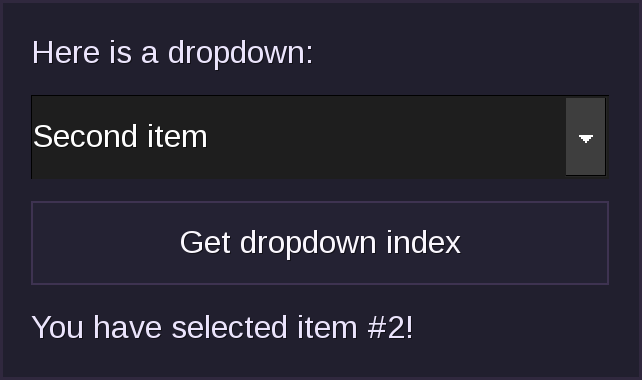
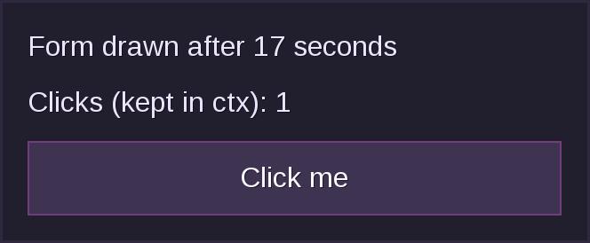
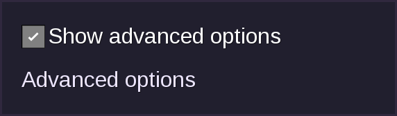
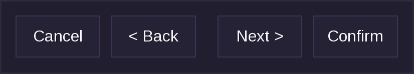
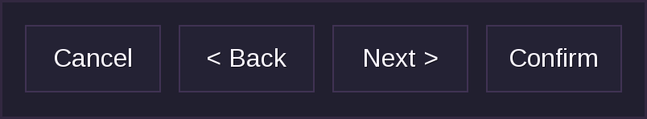
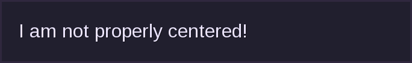
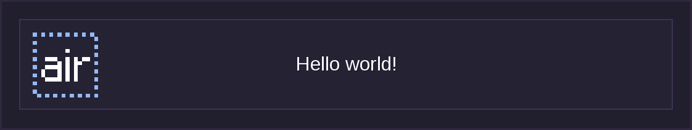
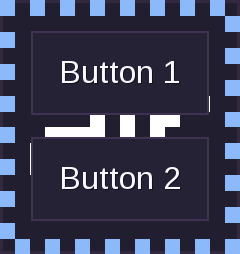
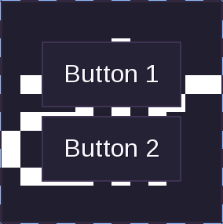
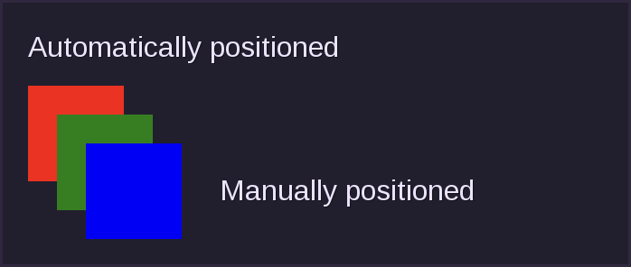

Start Here
Flow Unofficial Documentation
Flow is a layout manager for Luanti menus. Describe a form with plain Lua tables, and flow positions, sizes, and shows it for you, so you never write a formspec by hand.
local gui = flow.widgets
local form = flow.make_gui(function(player, ctx)
return gui.VBox {
gui.Label { label = "Hello world!" },
gui.ButtonExit { label = "Close" },
}
end)
form:show(player)
Start Here
| Page | What it covers |
|---|---|
| Introduction | What flow is, why it exists, and what it does and does not do. |
| Getting Started | Your first form, step by step: layout, input, and events. |
| Updating Forms | Redrawing a form, keeping ctx, and how long ctx lives. |
| Terms Used in This Documentation | What "form", "element", "build function", and friends mean here. |
Reference
Layout
| Page | What it covers |
|---|---|
| Layout Elements | VBox, HBox, Stack, Flow, scrolling, paging, and spacers. |
| Padding and Spacing | Space around and between elements. |
| Hiding Elements | Hiding elements, with or without keeping their space. |
| Manual Positioning | Placing elements at exact coordinates. |
Elements
| Page | What it covers |
|---|---|
| Common Aspects | Sizes, names and values, events, colors, and parameters every element takes. |
| Functional Elements | Labels, buttons, fields, dropdowns, tables, inventory lists, and more. |
| Hypertext Markup | Formatted text, images, and links in gui.Hypertext. |
| Tooltips | Text shown when the player hovers over an element. |
Display
| Page | What it covers |
|---|---|
| Inventory | Using a form as the player's inventory screen. |
| HUDs | Showing a form over the game screen. |
| Styling | Colors, images, fonts, and other style properties. |
Other Features
| Page | What it covers |
|---|---|
| Advanced | Embedding forms, running code on close, and custom elements. |
| Experimental | Features that may change: prepends, backgrounds, window position, and more. |
| Popovers | Highly experimental popup containers. |
Limitations and Security
| Page | What it covers |
|---|---|
| Unsupported Features | Formspec features flow lacks, and what to do instead. |
| Security | What flow checks from clients, and what you must check yourself. |
Quick Answers
| I want to... | Go to |
|---|---|
| Show a form to a player | Your First Form |
| Read what the player typed or picked | Reading Input and Reacting |
| Make changes to an open form | Updating Forms |
| Trigger a form redraw on an update | Redrawing When a Value Changes |
| Elegantly arrange form components | Layout Elements and Automatic Alignment |
| See if an element has hidden features | Styling |
Development Tools
- Flow Inspector: helps you develop and debug forms.
- Flow Playground / Tutorial: try flow in the browser.
- Snippets: small reusable pieces of code.
Introduction
Flow is a layout manager and formspec API replacement for Luanti (formerly Minetest). You describe a menu with plain Lua tables, and flow works out where everything goes. It is vaguely inspired by Flutter and GTK.
Why Flow
Luanti's built-in menu format is the formspec: one long string of buttons, text fields, and inventory slots. With a formspec you place every element by position and size yourself, work around its many gotchas, and get no help from your editor.
A small menu written both ways:
-- Formspec
local fs = "formspec_version[7]size[6,3]" ..
"label[0.5,0.7;Hello world!]" ..
"button_exit[0.5,1.5;3,0.8;ok;OK]"
-- Flow
local gui = flow.widgets
local form = flow.make_gui(function(player, ctx)
return gui.VBox {
gui.Label { label = "Hello world!" },
gui.ButtonExit { label = "OK" },
}
end)
Flow generates the formspec behind the scenes, so you never have to write one. If your editor supports it, you also get definitions and completion for every element, because LuaCATS annotations are included.
Features
Layouting
- Automatic placement. Flow works out every position, so there's no arithmetic to redo when you add one button.
- Comprehensive layout elements. Nest
HBoxandVBoxcontainers and they line up on their own. Scrolling, paging, stacking, wrapping, and flexible spacing are covered too. And yes, also manual placement usingContainer. - Automatic sizing. Labels, checkboxes, buttons, text fields, password fields, text areas, drop-downs, text lists, and vertical labels size themselves. See Sizes.
- Room to grow. Set
expand = trueand an element fills any spare space, see Parameters Shared by All Elements. - Translation-friendly. Elements sized from their label grow or shrink to fit longer text1.
Other Features
- No form names. They still exist internally, but you never have to deal with them.
- No state bookkeeping. Flow remembers the values of fields, scrollbars, checkboxes, and the like across redraws, and reapplies them for you, see Names and Values.
- Built-in debugging. The inspector mod helps you develop and debug forms.
- Safer input handling. Flow mitigates some common formspec input security issues, see Security below.
Limitations
Flow does not support everything that regular formspecs do. See Unsupported Features for the list.
Security
Flow ignores potentially malicious formspec input from clients, such as buttons or fields that were never shown, out-of-bounds dropdown selections, and newlines in Field elements. See Security for what flow checks and what you still need to check yourself.
Try It Online
The online tutorial and playground (source) runs flow in the browser. Many code snippets in this documentation have a "run" button that opens them there.
Playground limitations
Not all snippets work in the playground, as it does not support every formspec element. See Unsupported Features.
The official documentation is at https://luk3yx.gitlab.io/minetest-flow/.
Next
Ready to write a form? Continue with Getting Started.
-
This is an estimate, not a measurement. The real size of a label depends on the client's font, DPI, window size, and formspec scaling settings, and Luanti gives mods no way to measure text. Flow assumes 0.21 slots per character (UTF-8 characters, not bytes, counting the longest line) and 0.4 slots per line of height, scaled by any
*1.5-stylefont_sizestyle. It ignores the font. If the estimate is off for your text, setw,h, ormin_wyourself. ↩
Getting Started
This page takes you from an empty mod to a form that reacts to the player. Each step builds on the last, and everything else (updating forms, styling, HUDs, ...) is covered on later pages.
Setup
Add flow to the dependencies in your mod's mod.conf:
depends = flow
At the top of each Lua file that builds forms, add:
local gui = flow.widgets
Every element (label, button, box, ...) is a function in gui, and the examples in this documentation assume this line exists. See Terms Used in This Documentation if a word is unfamiliar.
Your First Form
A form is a menu shown to a player. You describe it with a build function, which returns the elements to show, and pass that to flow.make_gui(). form:show(player) then shows it.
local gui = flow.widgets
local form = flow.make_gui(function(player, ctx)
return gui.VBox {
gui.Label { label = "Hello world!" },
gui.ButtonExit { label = "Close" },
}
end)
core.register_chatcommand("hello", {
description = "Show the hello form",
func = function(name)
form:show(core.get_player_by_name(name))
end,
})
Run /hello in game to open it. You gave no positions or sizes: flow stacked the label above the button and sized both to fit their text.
Playground
To skip the mod setup while you experiment, use the online playground. Many snippets in this documentation have a "run" button.
The Build Function
The build function is called every time the form is drawn, with the player and a context table (ctx). It returns one root element, which holds everything else in the form. Because it runs again on every redraw, build the form from the current state rather than keeping elements around.
ctx belongs to one player's copy of the form. Flow keeps the same table for as long as the form is open and passes it to the build function and to every event function, so you can store anything in it. form:show(player, ctx) uses the table you pass as is, or a new empty one if you leave it out.
Do not use form as a ctx key
Flow stores the current values of the form's inputs in ctx.form. Do not use form as a key of your own or replace ctx.form: flow raises an error if you do that in the build function.
Arranging Elements
Layout elements place the elements inside them. gui.VBox stacks them vertically, and gui.HBox puts them side by side. Nest them to build up a layout:
local form = flow.make_gui(function(player, ctx)
return gui.VBox {
gui.Label { label = "Are you sure?" },
gui.HBox {
gui.ButtonExit { label = "Cancel" },
gui.ButtonExit { label = "Confirm" },
},
}
end)
Sizes are measured in inventory slots and are worked out for you. When you need more control, see Layout Elements, Padding and Spacing, and Common Aspects.
Reading Input and Reacting
Give an input element a name and flow stores its current value in ctx.form[name]. Give an element an on_event function to run code when the player uses it. Return true from on_event to redraw the form with the new state:
local form = flow.make_gui(function(player, ctx)
return gui.VBox {
gui.Label {
label = ctx.greeted
and ("Hello, " .. ctx.greeted .. "!")
or "Type your name and press the button.",
},
gui.Field { name = "username", label = "Your name" },
gui.Button {
label = "Greet me",
on_event = function(player, ctx)
if ctx.form.username ~= "" then
ctx.greeted = ctx.form.username
end
return true
end,
},
}
end)
Text fields only send their text when the player presses a button or Enter, which is why the greeting appears on the button press. See Names and Values and Events for the details.
A Complete Example
This form combines everything above, and adds a way to start with a value from outside. The three ctx values in it look alike but differ:
| Name in the example | What it is | Who writes it |
|---|---|---|
ctx.value |
The starting ctx: whatever you passed to form:show. |
You, before the form is shown. |
ctx.form.cool_dropdown |
The live value of the input named cool_dropdown. |
Flow: it sets the initial value on the first draw and updates it when the player changes the input. |
ctx.picked |
Your own state. | Your on_event function, when the player presses the button. |
All three are in the same table.
local gui = flow.widgets
local STARTING_SELECTION = 3 -- Change and rerun to see the difference.
local function build_vbox(player_obj, ctx)
return gui.VBox {
gui.Label { label = "Here is a dropdown:" },
gui.Dropdown {
name = "cool_dropdown",
items = { 'First item', 'Second item', 'Third item' },
index_event = true,
selected_idx = ctx.value or 1
},
gui.Button {
label = "Get dropdown index",
on_event = function(player, ctx)
local idx = ctx.form.cool_dropdown or ctx.value or 1
core.chat_send_player(player:get_player_name(),
("You have selected item #%d!"):format(idx))
-- Remember the index and redraw so the label below shows it.
ctx.picked = idx
return true
end,
},
gui.Label {
label = ctx.picked
and ("You have selected item #%d!"):format(ctx.picked)
or "Pick an item, then press the button.",
},
}
end
local form = flow.make_gui(build_vbox)
-- "singleplayer" is the default player name in single-player games.
local player_obj = core.get_player_by_name("singleplayer")
form:show(player_obj, { value = STARTING_SELECTION }) -- Starting ctx is optional.

Pick an item and press the button: the button's on_event function stores the index in ctx.picked and returns true, which redraws the form so that the label under the button changes. The same message is also sent to the chat.
The flow repository also has an example.lua that demonstrates layouting and alignment in more depth.
Try that example in game
In singleplayer, a player with the server privilege can run /flow-example to open it.
Where to Go Next
- Change what is on screen while a form is open: Updating Forms covers
update,update_where, automatic redraws, and how longctxlives. - Learn the elements: Functional Elements for labels, buttons, fields, and so on, and Layout Elements for boxes, scrolling, and wrapping.
- Make it look right: Styling, Padding and Spacing, and Hiding Elements.
- Show it somewhere else: Inventory and HUDs.
Updating Forms
A form is drawn once when you show it, and drawn again whenever something tells flow to redraw it. This page covers every way to trigger a redraw, how ctx survives them, and how long ctx lives. It assumes you have read Getting Started.
Updating From Your Code
If some data displayed inside a form changes (for example a timer or progress indicator), you can use my_gui:update(player) or my_gui:update_where(func) (see the example below) to update the form without resetting ctx or showing the form again if the player has closed it.
Luanti has no way to change a form that is already open, so flow has to show the whole form again.
Updates can discard typed text
Because the whole form is shown again, players may lose text typed into fields that hasn't been sent to the server (which happens when they press a button or Enter) when the form is updated. See Names and Values.
Here is a form with one button for each way to update it. The counter is a plain variable, not something stored in ctx, so flow cannot notice when it changes. Each button adds 1 to it and then redraws the forms that should show the new number.
local gui = flow.widgets
local counter = 0 -- External state; flow cannot track its changes.
local my_gui
local function add_button(label, update)
return gui.Button {
label = label,
on_event = function(player, ctx)
counter = counter + 1
update(player, ctx)
end,
}
end
my_gui = flow.make_gui(function(player, ctx)
ctx.test = 123 -- Used by update_where() below.
return gui.VBox {
gui.Label { label = "Counter: " .. counter },
add_button("Add 1 and update my form", function(p)
my_gui:update(p)
end),
add_button("Add 1 and update forms with ctx.test == 123", function()
my_gui:update_where(function(_, c) return c.test == 123 end)
end),
add_button("Add 1 and update forms of admins", function()
my_gui:update_where(function(p)
return core.check_player_privs(p:get_player_name(), "server")
end)
end),
add_button("Add 1 and update everyone's form", function()
my_gui:update_where(function() return true end)
end),
}
end)
Inside an on_event handler, you can return true instead of calling my_gui:update(player), as the click counter example below does.
HUDs and inventories
If you're using a form as a HUD, you must call my_gui:show_hud(player) to update it. See HUDs for how to show and close one. Inventory forms are updated with set_as_inventory_for, see Inventory. The table in Ways to Redraw a Form compares all of them.
Updating Keeps ctx
Updating a form does not reset ctx. In this example a timer redraws every open copy of the form each second, while the click counter stored in ctx survives every redraw:
local gui = flow.widgets
local seconds = 0 -- Shared by every open copy of the form.
local form = flow.make_gui(function(player, ctx)
return gui.VBox {
gui.Label { label = ("Form drawn after %d seconds"):format(seconds) },
gui.Label { label = ("Clicks (kept in ctx): %d"):format(ctx.clicks or 0) },
gui.Button {
label = "Click me",
on_event = function(player, ctx)
ctx.clicks = (ctx.clicks or 0) + 1
return true -- redraw this form
end,
},
}
end)
local function tick()
seconds = seconds + 1
form:update_where(function() return true end)
core.after(1, tick)
end
core.after(1, tick)
form:show(core.get_player_by_name("current_player"))

Redrawing When a Value Changes
You often do not need return true. If your build function reads the value of a named input from ctx.form, flow notices and redraws the form by itself whenever the player changes that value.
local form = flow.make_gui(function(player, ctx)
return gui.VBox {
gui.Checkbox { name = "advanced", label = "Show advanced options", selected = true },
-- Reading ctx.form.advanced here makes flow redraw the form
-- whenever the checkbox changes.
ctx.form.advanced and gui.Label { label = "Advanced options" }
or gui.Nil {},
}
end)

The rules are:
- Only reads while the build function runs count, including reads in helper functions that it calls. Reading
ctx.forminside anon_eventfunction does not. - The form is only redrawn if the value is different from the stored one.
- If the element has its own
on_eventfunction, there is no automatic redraw. That function has toreturn trueinstead. - Text fields only send their text when the player presses a button or Enter (see Names and Values), so the redraw happens then, and only if the text is different from the stored one. Pressing a button with the text unchanged does not redraw because of the field.
Here are the two cases that surprise people. Only Show details redraws the form when ticked:
local form = flow.make_gui(function(player, ctx)
return gui.VBox {
-- No on_event, and the build function reads it below: ticking
-- this redraws the form.
gui.Checkbox { name = "details", label = "Show details" },
-- Has its own on_event: ticking this does NOT redraw the form
-- unless the function returns true.
gui.Checkbox {
name = "loud", label = "Loud",
on_event = function(player, ctx) end,
},
gui.Label {
label = ("details = %s, loud = %s"):format(
tostring(ctx.form.details), tostring(ctx.form.loud)),
},
}
end)
Context Lifetime by Mode
How long ctx lives depends on how the form is shown:
| How the form is shown | Where ctx comes from |
How long it is kept |
|---|---|---|
my_gui:show(player, ctx) |
The table you pass, or a new empty one. | Until the form is closed. update, update_where and return true keep it. Calling show again starts with a new one. |
my_gui:set_as_inventory_for(player, ctx), see Inventory |
The table you pass. If you pass none and this form is already the player's inventory, the existing ctx is reused, otherwise a new empty one. |
Until the form is unset or the player leaves. Passing a new ctx replaces the old one. |
my_gui:show_hud(player, ctx), see HUDs |
The table you pass, or a new empty one every time. | Not kept: flow remembers nothing between calls, so pass your own table each time. |
my_gui:render_to_formspec_string(player, ctx), see Rendering to a Formspec |
The table you pass, or a new empty one. | Flow keeps nothing: pass the same ctx each time you redraw. |
Ways to Redraw a Form
| Way | Redraws | Keeps ctx |
Works for |
|---|---|---|---|
return true from on_event or on_key_enter |
The form of the player who used it | Yes | Forms shown with show and inventory forms |
Reading ctx.form.name in the build function (see Redrawing When a Value Changes) |
The form of the player who changed the value | Yes | Forms shown with show and inventory forms |
my_gui:update(player) |
One player, if they have the form open | Yes | Forms shown with show only |
my_gui:update_where(func) |
Every player with the form open for whom func(player, ctx) returns true |
Yes | Forms shown with show only |
my_gui:set_as_inventory_for(player, ctx) |
One player | Reused if you pass none | Inventory forms only |
my_gui:show_hud(player, ctx) |
One player | No | HUDs only |
my_gui:show(player, ctx) |
One player (and the old form is replaced) | No, starts from the ctx you pass |
Forms shown with show |
Terms Used in This Documentation
Flow, Luanti, and formspecs each have their own vocabulary, and a few words (such as "flow") are used for more than one thing. This page lists what each term means in this documentation.
| Term | Meaning |
|---|---|
| Form | A menu made with flow, created with flow.make_gui() and shown with form:show(), see Getting Started. This documentation does not call it a "gui". |
| Formspec | Luanti's own text format for menus. Flow generates formspecs for you. |
| Element | One part of a form, such as a label, a button, or a box. Elements are made with the functions in flow.widgets (the name of that table is the only place "widget" is used), see Functional Elements and Layout Elements. |
| Build function | The function you pass to flow.make_gui(). It returns the elements of the form and is called every time the form is drawn, see The Build Function. |
| Root element | The element that the build function returns, which holds everything else in the form. |
| Container | An element that holds other elements. gui.Container is the one whose elements you place yourself with x and y, see Manual Positioning. |
| Layout element | An element that arranges the elements inside it, such as gui.VBox, gui.HBox, and gui.Stack, see Layout Elements. |
| Flow | The mod. gui.Flow (written with the gui. prefix) is an element of the mod that wraps its children onto new rows. |
ctx |
The context table of a form, see Getting Started. |
Layout
Layout Elements
You should do local gui = flow.widgets in your code to improve readability. All examples will assume that this line exists. A form is built from these elements, see Getting Started.
These elements control how other elements are arranged. Most of them draw nothing themselves: they place the elements inside them, work out how big everything is, and share out any spare space. Elements that draw something or accept input (labels, buttons, fields, ...) are described in Functional Elements. To place elements at exact coordinates instead, see Manual Positioning.
Do not use w and h on boxes and stacks
Do not use w and h to size gui.VBox, gui.HBox, or gui.Stack, use min_w and min_h instead: these elements always work out their size from their contents. The one exception is manual positioning with a gui.Stack: if you set both w and h, flow does not position its children, so each child keeps its own x and y and needs its own w and h (see the noclip example). Setting only one of them makes flow overwrite the children's x and y. See Common Aspects for which elements take w and h.
gui.VBox
A vertical box, similar to a VBox in GTK. Elements inside a VBox are stacked vertically.
gui.VBox {
gui.Label { label = "I am a label!" },
-- Positioned underneath the first one.
gui.Label { label = "I am a second label!" },
}
Elements inside boxes have a spacing of 0.2 between them. Add spacing = <number> to change it (gui.HBox and gui.Flow work the same way). Spacing is the gap between elements, while padding is the space around one element.
gui.HBox
Like gui.VBox but stacks elements horizontally instead.
gui.HBox {
gui.Label { label = "I am a label!" },
-- Positioned to the right of the first one.
gui.Label { label = "I am a second label!" },
-- You can nest HBox and VBox elements
gui.VBox {
gui.Image { w = 1, h = 1, texture_name = "default_dirt.png", align_h = "center" },
gui.Label { label = "Dirt", expand = true, align_h = "center" },
}
}
gui.ScrollableVBox
Similar to gui.VBox, but shows its contents in an area of a fixed size that the player can scroll, and automatically adds a scrollbar next to it. Anything outside the area is hidden until it is scrolled into view. The area is w by h, both are optional: the width defaults to the width of the contents and the height defaults to the height of the contents, up to a maximum of 5.
Old clients
On clients too old to support scrolling areas (before Luanti 5.4), flow shows one page of the contents at a time instead, with < and > buttons to change page. See gui.PaginatedVBox.
To change how the scrollbar looks, set custom_scrollbar to a table of parameters for gui.Scrollbar, for example custom_scrollbar = {w = 0.8} to make it wider.
gui.ScrollableVBox {
-- Required. It keeps flow from mixing up scrollbar states if
-- elements are removed or reordered.
name = "vbox1",
-- Optional, defaults to min(height_of_content, 5). This is shorter
-- than the contents, so a scrollbar is added.
h = 2,
gui.Label { label = "I am a label!" },
gui.Label { label = "I am a second label!" },
-- The rest is hidden until the player scrolls down.
gui.Label { label = "I am a third label!" },
gui.Label { label = "I am a fourth label!" },
}
gui.Spacer
A "flexible space" element that expands by default. A spacer only fills spare room, so this box has a min_w and a background color to show how much there is:
gui.HBox {
min_w = 12,
bgcolor = "#335577", -- Only here to show the edges of the box.
-- On the left-hand side
gui.Button { label = "Cancel" },
gui.Button { label = "< Back" },
gui.Spacer {},
-- On the right-hand side
gui.Button { label = "Next >" },
gui.Button { label = "Confirm" },
}

Prefer expand when it works
Prefer expand = true with align_h or align_v when that gives the same result, see Parameters Shared by All Elements.
Spacers are implemented as hidden containers, so a few things behave differently from other elements:
- A spacer counts as an element when flow adds the
spacingbetween the elements of a box. Each spacer therefore adds a gap on each side of it, which is taken out of the spare room it fills. If the box has no spare room, the spacer has no width but the gaps are still there. - A spacer cannot have child elements and flow raises an error if you give it any.
- Several spacers (or other elements with
expand = true) in the same box share the spare space equally.
For a spacer, "auto" alignment means "fill" (see Automatic Alignment).
You can get the same layout without a spacer: the expand = true button takes the spare space and align_h = "left" keeps it at its normal width.
gui.HBox {
min_w = 12,
bgcolor = "#335577",
gui.Button { label = "Cancel" },
gui.Button { label = "< Back", expand = true, align_h = "left" },
gui.Button { label = "Next >" },
gui.Button { label = "Confirm" },
}

Do not use spacers to center elements
It creates unnecessary boxes, and labels may end up slightly off-center, because label widths depend on screen size and DPI and this code does not trigger the centering hack. The centering hack is what flow does when align_h or expand centers or stretches a label: it draws the label as a background-less button as wide as the whole area, so the client centers the text itself.
-- This is bad!
gui.HBox {
min_w = 12,
bgcolor = "#335577",
gui.Spacer {},
gui.Label { label = "I am not properly centered!" },
gui.Spacer {},
}

Do this instead:
gui.VBox {
min_w = 12,
bgcolor = "#335577",
gui.Label { label = "I am centered!", align_h = "center" },
}
gui.Nil
A tool for ternary-ish conditional elements. Unlike visible = false (see Hiding Elements), which keeps its space, a gui.Nil takes up none. Untick the checkbox to remove the box: the last label moves up.
local form = flow.make_gui(function(player, ctx)
return gui.VBox {
gui.Checkbox { name = "show_box", label = "Show the box", selected = true },
gui.Label { label = "The box below is only present if the box is ticked:" },
ctx.form.show_box ~= false and gui.Box { w = 1, h = 1, color = "#FF0000" }
or gui.Nil {},
gui.Label { label = "I move up when the box disappears." },
}
end)
Use sparingly
Flow still has to process each Nil to remove it.
gui.Container
A group of elements that you position yourself with x and y instead of letting flow lay them out. See Manual Positioning.
Example
gui.Container {
w = 6, h = 2, -- Optional
{ type = "box", x = 0, y = 0, w = 1, h = 1, color = "red" },
{ type = "label", x = 1, y = 1.5, label = "Hello world!" },
}
gui.Stack
This container element places its children on top of each other. All child elements are expanded in both directions.
Note
Some elements (such as centred labels) won't pass clicks through to the element below them.
Example
gui.Stack {
min_w = 10,
gui.Button { label = "Hello world!" },
-- A red square, drawn on top of the button. The texture is made with a
-- texture modifier, so this example does not need any files.
gui.Image { w = 1, h = 1, texture_name = "[fill:16x16:red", padding = 0.2, align_h = "left" },
}

gui.PaginatedVBox
Like gui.ScrollableVBox, but splits the contents into pages instead of scrolling. Only one page is shown at a time, with a < button, a "Page 1 of 3" label, and a > button underneath to change page. It needs a unique name, and w and h work the same way as for gui.ScrollableVBox. Elements are never cut in half: an element that does not fit on a page starts the next one.
gui.ScrollableVBox uses this automatically on clients that cannot scroll.
gui.Flow
A container with a fixed width that wraps its children onto new rows when they do not fit. You must give it a w, and it does not support h, min_w, or padding. See Which Elements Take w, h, min_w, and min_h. Use spacing to change the gap between elements.
This is similar to GTK's FlowBox, but with a lot fewer features.
The width also has to leave room for the spacing between elements. spacing has the same default as for gui.VBox (0.2, see also Padding). Flow needs w to be at least 1 + 0.2 + 1 + 0.2 + 1 (3.4) to fit three 1-wide elements on one row, and at least 4.6 to fit four, so 3 * (1 + 0.2) (3.6) is a safe width for three.
gui.Flow {
-- Fits 3 items, including the default spacing
w = 3 * (1 + 0.2),
-- Five colored squares: three on the first row, two on the second.
gui.Box { w = 1, h = 1, color = "#E74C3C" },
gui.Box { w = 1, h = 1, color = "#E67E22" },
gui.Box { w = 1, h = 1, color = "#F1C40F" },
gui.Box { w = 1, h = 1, color = "#2ECC71" },
gui.Box { w = 1, h = 1, color = "#3498DB" },
}
gui.Padding (Deprecated)
Wraps a single element to add padding around it.
Deprecated
This element logs a warning. Use the padding parameter of the element itself instead, see Padding.
Padding, Spacing, and Backgrounds
Most elements can have a padding value, which will add the specified amount of padding around the element, measured in slot units. The "root" element of the form (the one returned by the build function) has a default padding of 0.3, everything else has a default padding of 0.
padding is ignored on some elements
gui.Flow,gui.ScrollableVBox, andgui.PaginatedVBox. To pad one, put it inside agui.VBox(or another layouting element) and setpaddingon that instead.- Elements inside a
gui.Container, which are placed at theirxandyand are not padded, see Manual Positioning. - Invisible elements such as
gui.Style, which take up no space.
gui.Padding is deprecated
The gui.Padding element wraps a single element and pads it. Use the padding parameter instead.
gui.HBox and gui.VBox have a spacing field which specifies how much spacing there is between elements inside the box. Its default value is described in gui.VBox.
Box elements (gui.HBox and gui.VBox) can optionally have bgimg and bgimg_middle parameters that specify a background for the box. bgimg is the name of a texture, which is stretched to fill the box. If bgimg_middle is set as well, the texture is drawn as a nine-slice whose corners are bgimg_middle pixels big, so one small texture can make a background of any size. The background will be drawn behind any padding that the box has.
The examples below use a small 16x16 texture, a white border around a blue square. It is made with texture modifiers, so no file is needed. Because the border is only 2 pixels wide, you can see how it is stretched.
Example with only bgimg. The whole texture is stretched, so the border gets thick and blurry:
gui.VBox {
-- Stretch the texture over the whole box
bgimg = "[fill:16x16:white^[fill:12x12:2,2:#336699",
gui.Button { label = "Button 1" },
gui.Button { label = "Button 2" },
}

Example with bgimg_middle as well. The corners and edges keep their 2 pixel border, and only the middle is stretched:
gui.VBox {
padding = 0.5,
spacing = 0.1,
-- Draw the texture as a nine-slice
bgimg = "[fill:16x16:white^[fill:12x12:2,2:#336699",
bgimg_middle = 2,
gui.Button { label = "Button 1" },
gui.Button { label = "Button 2" },
}

The padding around the VBox is 0.5 and the spacing between the buttons inside it is 0.1.
To draw a background behind other kinds of elements, see gui.Background and gui.Background9.
Hiding Elements
Elements inside boxes can have visible = false set to hide them from the player.
Hidden elements keep their space
Elements hidden this way will still take up space like with visibility: hidden; in CSS. To remove the space as well, see Alternatives.
Example
Untick the checkbox to hide the middle button: it disappears, but the gap it leaves stays.
local form = flow.make_gui(function(player, ctx)
return gui.VBox {
gui.Checkbox { name = "show", label = "Show the middle button", selected = true },
gui.Button { label = "First button" },
gui.Button { label = "Middle button", visible = ctx.form.show ~= false },
gui.Button { label = "Last button" },
}
end)

Where It Works
visible = falseworks on elements insidegui.HBox,gui.VBox,gui.Stack,gui.ScrollableVBox, andgui.PaginatedVBox. In agui.Stack, the hidden element still counts towards the size of the stack.- It does nothing on elements placed directly inside a
gui.Containerorgui.ScrollContainer(the ones you position yourself withxandy): they are still drawn. See Manual Positioning. - It does nothing on the root element of the form (see Terms Used in This Documentation), which is always shown.
What Happens to Hidden Elements
Flow takes a hidden element out of the form after it has worked out the layout, and before it handles anything else. The player's client never receives it, so:
- A hidden button cannot be clicked or focused, and its
on_eventfunction is never called. The same goes for every other hidden element. - Its
styleandtooltipare not sent either. - A hidden input with a
nameis not registered, so flow does not set or updatectx.form[name](see Names and Values) while it is hidden. A value that is already inctx.formis kept and is applied again when the element is shown.
Type something in the field of this example, then untick the checkbox. The field disappears, but the label still shows what you typed, and the text is back in the field when you tick the checkbox again:
local form = flow.make_gui(function(player, ctx)
return gui.VBox {
gui.Checkbox { name = "show_note", label = "Show the note field", selected = true },
gui.Field { name = "note", label = "Note", visible = ctx.form.show_note ~= false },
gui.Label { label = "Stored note: " .. (ctx.form.note or "") },
}
end)
While the field is hidden, flow ignores a note value sent by the client, because the field is not registered, see What Flow Checks.
Alternatives
If you don't want hidden elements to take up any space, see the documentation for gui.Nil. gui.Nil is an invisible element (a tooltip) that is hidden with visible = false, so it is skipped when the layout is worked out. See Invisible Elements for the others. An invisible element that is itself given visible = false is removed from the form in the same way, it just never had a size.
Manual Positioning
Dynamic Element Types
A gui.Label{...} call just returns a table with type = "label" added to it, so you can write {type = "label", label = "Hello world!"} instead of gui.Label{label="Hello world!"}. This is what you need inside gui.Container (see below), and it is also useful if you want to choose the element type from a variable. The type is the name of the gui function in lowercase with underscores between words, for example "item_image_button" for gui.ItemImageButton. The element types table in Styling lists many of them.
HBoxes and VBoxes can be created this way as well (with type = "hbox" and type = "vbox") and work anywhere gui.HBox and gui.VBox do. However, gui.ScrollableVBox, gui.PaginatedVBox, gui.Spacer, gui.Flow, and gui.Nil are functions that build other elements instead of element types, so they cannot be created with a type table. The flow mod does not recognize those type names, and showing the form fails with an Unknown element error.
An example of this is in example.lua in the flow repository.
Manual Positioning of Elements
You can use gui.Container elements to contain manually positioned elements. Every element inside a container has an x and y, which is the distance of its top-left corner from the top-left corner of the container, in the same units as w and h. Containers can be nested, in which case the offsets add up. If you do not give a w and h, flow uses the smallest size that fits all the elements inside, see Which Elements Take w, h, min_w, and min_h. A gui.ScrollContainer also positions its elements by hand.
Container Example
gui.VBox {
gui.Label { label = "Automatically positioned" },
-- The container is placed below the label by the VBox, and the
-- elements inside it are placed at their own x and y.
gui.Container {
{ type = "box", x = 0, y = 0, w = 1, h = 1, color = "red" },
{ type = "box", x = 0.3, y = 0.3, w = 1, h = 1, color = "green" },
{ type = "box", x = 0.6, y = 0.6, w = 1, h = 1, color = "blue" },
{ type = "label", x = 2, y = 1.1, label = "Manually positioned" }
},
}

Container: noclip Example
Luanti cuts off elements that stick out of the form unless their noclip style is true. This example puts a button and a box outside a 2 by 2 area, which is why it needs noclip. The gui.Stack is only a reference area: it draws nothing, and gives the two containers a known size to be placed against. Setting both w and h on a gui.Stack is supported for this: flow does not lay out such a stack, so its children keep their own x and y. In every other case flow positions the children itself and overwrites their x and y, which is why a stack with only w, or with min_w and min_h, would lose the x = -1 of the second container. See the warning in Layout Elements.
gui.Stack {
-- With both w and h set, flow does not position the stack's
-- children, so each keeps its own x and y. Each child then needs its
-- own x, y, w, and h. With only one of w and h set, flow positions
-- the children and discards their x and y.
w = 2, h = 2,
padding = 0,
gui.Container {
-- A container with no size takes no room, so it only marks a
-- point.
w = 0, h = 0,
x = 0, y = 0,
-- This moves the container itself: its top-left corner goes to
-- the middle of the stack (x = 1). It does not move or center
-- the elements inside it.
align_h = "center",
-- Elements inside a container are placed by their top-left corner,
-- relative to the container. The button is 1 by 1 and ends up at
-- x = 1, y = -1: directly above the right half of the stack.
{
type = "button", padding = 0,
x = 0, y = -1, w = 1, h = 1,
label = "☺",
style = {
noclip = true,
font_size = "*3",
},
},
},
-- These x-offsets cancel each other out.
gui.Container {
w = 0, h = 0,
x = -1, y = 0,
-- "start" leaves the container where it is. Alignment applies to
-- the container, never to the elements inside it.
align_h = "start",
-- The container is at x = -1 and the box is 1 to the right of it,
-- so the box ends up at x = 0, y = -2: above the left edge of the
-- stack.
{
type = "box", x = 1, y = -2, w = 1, h = 1,
color = "green", style = { noclip = true },
},
},
}
noclip is set per element
noclip is a style of each element, and the style of an element only applies to that element, so set it on every element that sticks out, as both of the elements above do.
A container can also go inside a gui.Stack, see gui.Stack.
Do not put layout elements inside gui.Container
Do not put layout elements (like gui.VBox, gui.HBox, and gui.Stack) inside gui.Container, whether you write them with gui.VBox or with type = "vbox". A container never lays out its children, it only places them at their x and y.
If you need a box inside a container anyway, this table shows what happens:
Container has w and h |
Box has w and h |
Result |
|---|---|---|
| No | No | Works: flow lays out the box. padding, align_h, and align_v on the box are not applied. |
| No | Yes | Broken: the box's children get no positions. |
| Yes | No | Broken: flow stops with an error. |
| Yes | Yes | Broken: the box's children get no positions. |
This does not stop you from using a gui.Container inside a layouting element, as in the example above. To get the same effect inside a container, put the elements at exact x and y positions yourself.
Elements
Common Aspects
All flow elements (widgets) draw something, change size/position of other elements, or accept input. Every element is a function in flow.widgets that takes a table of parameters. For example:
local gui = flow.widgets
gui.Label { label = "Hello world!" }
Sizes
Sizes are measured in inventory slots: 1 is the width and height of one item slot. There is no hidden padding or spacing, so two boxes that are 1 wide and placed next to each other with spacing = 0 touch. You never give an element a position, boxes place their children and flow works out the total size of the form.
Elements that show text, such as labels, buttons, and fields, are sized to fit their text unless you give them a w and h. Elements that show something without a natural size, such as images, boxes, models, and tables, need an explicit w and h (their parameter lists below do not say -- Optional). Flow can only estimate the width of text because the real width depends on the player's font, screen size, and scaling settings, so avoid layouts that rely on exact text widths (see the note on label sizes in the introduction).
Which Elements Take w, h, min_w, and min_h
Elements that size themselves are the ones flow can work out a size for: from their text (labels, buttons, fields, dropdowns, text lists), or from the elements inside them (containers and boxes). For these, w and h are optional, and min_w and min_h set a lower limit on the size flow works out. min_w and min_h only apply to a dimension that flow works out itself: if you set both w and h, both minimums are ignored, and if you set only w, min_w is ignored and min_h still applies. Elements that cannot size themselves ignore min_w and min_h.
| Element | w and h |
min_w and min_h |
|---|---|---|
gui.Label |
Optional | Yes |
gui.Vertlabel, gui.Checkbox |
Not supported, always sized automatically | Yes |
gui.Button, gui.ButtonExit, gui.ButtonURL |
Optional | Yes |
gui.ImageButton, gui.ImageButtonExit, gui.ItemImageButton |
Optional, the size is worked out from the label like a button (at least 1.6 by 0.8), so you usually want to set them | Yes |
gui.ButtonUrlExit |
Required, it has no automatic size (see the note below the table) | No |
gui.Field, gui.Pwdfield, gui.Textarea, gui.Dropdown, gui.Textlist |
Optional | Yes |
gui.Container, gui.ScrollContainer |
Optional, the size is worked out from the elements inside | Yes |
gui.HBox, gui.VBox, gui.Stack |
Not supported, use min_w and min_h. The exception is a gui.Stack with both set, for manual positioning, see the warning in Layout Elements |
Yes |
gui.ScrollableVBox, gui.PaginatedVBox |
Optional | Not checked |
gui.Spacer |
Optional | Not checked |
gui.Flow |
w required, h not supported |
No |
gui.Image, gui.AnimatedImage, gui.ItemImage, gui.Model |
Required | No |
gui.Box, gui.Table, gui.Hypertext, gui.Scrollbar, gui.Tabheader |
Required | No |
gui.List |
Required, in slots rather than in size units | No |
gui.Background, gui.Background9 |
Required, unless auto_clip is true |
No |
A missing size breaks the form
An element without a size that needs one is written to the form with an empty size, which Luanti rejects, so you will see it as a broken form rather than an error message.
gui.ButtonUrlExit has no automatic size, unlike gui.ButtonURL, so its w and h are required, see gui.ButtonUrlExit.
Names and Values
Many elements take a name. Input elements (fields, checkboxes, dropdowns, lists of text, tables, ...) with a name have their current value stored in ctx.form[name] and flow remembers it when the form is redrawn:
| Element | Value in ctx.form[name] |
|---|---|
gui.Field, gui.Pwdfield, gui.Textarea |
Text (string) |
gui.Checkbox |
true or false |
gui.Dropdown |
Text of the selected item, or its number if index_event = true |
gui.Textlist, gui.Table |
Number of the selected row (first row is 1) |
gui.Tabheader |
Number of the selected tab (first tab is 1) |
gui.Scrollbar |
Position of the slider (number) |
gui.Hypertext |
"action:" and the name of the last clicked <action> link |
Until the player changes something, the value is the element's initial value (default, selected, selected_idx, value, current_tab). If you did not give one, it is "" for text, false for checkboxes, 1 for tables, text lists, and dropdowns with index_event = true, the text of the first item for other dropdowns, and 0 for scrollbars. gui.Hypertext has no starting value, and neither has gui.Tabheader without a current_tab, so ctx.form[name] is nil until the player clicks a link or a tab.
Text fields can be out of date
Text fields only send their text to the server when the player presses a button or Enter, so ctx.form can be out of date until then.
If your build function reads ctx.form.some_name, flow redraws the form automatically whenever the player changes that value (unless the element has its own on_event), see Redrawing When a Value Changes. Buttons do not store a value. See Security for how flow checks the values that clients send.
Events
Elements that the player can use accept an on_event function, which is called with the player and ctx. Return true from it to redraw the form, see Ways to Redraw a Form. A name is optional if you use on_event, flow makes one up.
Flow has four callbacks. All of them are called with the player and ctx:
| Callback | Put it on | Called when | Return true |
|---|---|---|---|
on_event |
Any element the player can use | The client sends the element's name: a button when it is clicked, an input when the player changes it. A text field is sent with every submission, so its on_event is called whenever the player presses any button or Enter. |
Redraws the form. |
on_key_enter, see Handling Enter Keypresses in Fields |
gui.Field, gui.Pwdfield |
The player presses Enter in the field. The on_event of the same field is called as well. |
Redraws the form. |
on_quit, see Running Code When a Form Is Closed |
gui.Container, gui.HBox, gui.VBox, gui.Stack |
The client closes the form. | Return nothing. |
on_close_popover, see Popovers |
The container that has a popover |
The player clicks outside the popover. | Redraws the form. |
Only one button callback runs for each submission, and it runs after all other callbacks, see Security. This includes on_close_popover, which flow handles as a button. on_event on a text field is easy to mix up with on_key_enter: on_event is called on any submission, on_key_enter only when Enter is pressed.
Colors
Colors are strings. "#RGB" and "#RRGGBB" are fully opaque, while "#RGBA" and "#RRGGBBAA" end with an alpha value, where 00 is fully transparent and FF is fully opaque. Color names also work (all the names from CSS, such as "red" and "darkgreen"), and you can add an alpha value after a # to a color name. The alpha value is one or two hexadecimal digits, so "darkgreen#08" is dark green with an alpha of 08 (hex, about 3% opaque) and "darkgreen#80" is about half transparent.
Box colors are semitransparent
gui.Box, and the bgcolor of containers (which flow draws with a box), are the exception to the opaque rule: a "#RGB" or "#RRGGBB" color there is drawn semitransparent. Color names are not affected.
Most text can also be coloured by putting color escape sequences in it, such as the ones made by core.colorize(). Dropdown items and tab captions are an exception, they cannot be coloured. Colors are used by many style properties such as bgcolor and textcolor.
Textures and Items
A texture name is the file name of an image from the textures folder of any loaded mod, such as "default_dirt.png". It is used by elements such as gui.Image and gui.ImageButton. An item name is the registered name of an item or node, such as "unifieddyes:colorium". It is used by gui.ItemImage and gui.ItemImageButton.
Invisible Elements
Some elements draw nothing and take up no space in a gui.HBox, gui.VBox, or gui.Stack. They change how a nearby element looks or behaves, and where you put them matters:
| Element | Where it goes | What it affects |
|---|---|---|
gui.Style |
Before | The element with that name |
gui.StyleType |
Before | Every element of that type after it |
gui.SetFocus |
Before | The element with that name |
gui.Listcolors |
Before | The gui.List elements after it |
gui.TableColumns |
Before | The gui.Table after it |
gui.TableOptions |
Before | The gui.Table after it |
gui.ScrollbarOptions |
Before | The gui.Scrollbar elements after it |
gui.Tooltip |
After | The element with the name in gui_element_name |
gui.Listring |
After | The gui.List elements it names, or the last two lists before it if it has no parameters |
The style and tooltip parameters that every element has are the exception: flow inserts the matching style or tooltip element directly before the element for you, so you do not need to place anything, see Styling and Tooltips. The "before" rule for the others comes from Luanti, and so does the "after" rule of gui.Tooltip. An invisible element is skipped when flow works out sizes and spacing, so putting one between two elements does not add a gap. gui.Nil is one as well: it is a tooltip that is hidden, which is why it takes no space.
Parameters Shared by All Elements
Every element, including Layout Elements, accepts these parameters in addition to its own:
| Parameter | Description |
|---|---|
padding |
Space around the element, see Padding. |
visible |
Set to false to hide the element but keep its space, see Hiding Elements. |
expand |
Set to true to make the element grow to fill spare space in the gui.HBox or gui.VBox it is in. If several elements expand, they share the spare space equally. |
align_h, align_v |
Where the element goes when there is more room than it needs: "start", "end", "center", "fill" (stretch), or "auto" (the default, flow picks one). "left" and "top" mean "start", "right" and "bottom" mean "end", and "center" means "center". |
min_w, min_h |
The smallest size of the element, for elements that size themselves, see Which Elements Take w, h, min_w, and min_h. |
tooltip |
Text to show when the player hovers over the element, see Tooltips. |
style |
Inline styles, see Styling. |
on_event |
A function to call when the player uses the element, see Events above. |
Automatic Alignment
"auto" only matters when an element is given more room than it needs. That happens across a box (the width in a gui.VBox, the height in a gui.HBox), along a box for elements with expand = true, and for every element in a gui.Stack. Flow then picks by the type of the element:
| Element | What "auto" does |
|---|---|
gui.Image, gui.AnimatedImage, gui.Model, gui.ItemImageButton |
Centered. |
gui.List |
Centered (a list cannot be stretched). |
gui.Label (vertically) |
Centered in the spare height. |
gui.Label (horizontally) |
Stays at the start, unless it has expand = true and the spare room is along the box. It is then stretched, which centers the text (see the centering hack in gui.Spacer). |
gui.Checkbox |
Centered vertically. Horizontally it stays at the start, unless it has expand = true and the spare room is along the box, then it is centered. |
| Everything else (buttons, fields, boxes, containers, ...) | Stretched to fill the spare room. |
Set align_h or align_v yourself to override this. Which elements need a w and h, and which do not, is a separate question, see Sizes above.
Nine-Slice Images
Images and image-like backgrounds can optionally be drawn as a "nine-slice". The picture is cut into a 3x3 grid, where the corners keep their size, the edges are stretched in one direction, and the middle is stretched in both. This lets one small texture make a panel or border of any size without distorting its corners. The middle_* parameters describe where the cuts are, in texture pixels (whole numbers):
middle_xonly: the cuts aremiddle_xpixels from every side.middle_xandmiddle_y:middle_xpixels from the left and right sides andmiddle_ypixels from the top and bottom.- All four: the middle rectangle starts at
middle_x, middle_yand ends atmiddle_x2, middle_y2. Negativemiddle_x2andmiddle_y2values are measured from the far (right/bottom) edge of the texture.
Here is the grid. The two vertical cuts are at x and x2, and the two horizontal cuts are at y and y2 (the names are those of the middle_* parameters):
x x2
| |
+---+----------------+---+
| 1 | 2 | 3 | <- above y
y-+---+----------------+---+
| 4 | 5 | 6 |
| | | |
+---+----------------+---+
y2| 7 | 8 | 9 | <- below y2
+---+----------------+---+
Parts 1, 3, 7, and 9 (the corners) keep their size. Parts 2 and 8 are stretched sideways, parts 4 and 6 are stretched up and down, and part 5 is stretched in both directions.
Nine-Slice Formats
The same cuts are written in three ways, depending on where they are used:
| Where | Parameter | How it is written | Meaning |
|---|---|---|---|
Elements with middle_* parameters, such as gui.Background9 and gui.AnimatedImage |
middle_x, middle_y, middle_x2, middle_y2 |
Separate numbers | As described above. |
bgimg_middle on the root element or a box or container, see Padding |
bgimg_middle |
One number | Same as middle_x alone: that many pixels from every side. |
bgimg_middle and fgimg_middle in a button style |
bgimg_middle, fgimg_middle |
A string: "x", "x,y", or "x,y,x2,y2" |
The same as middle_x; middle_x and middle_y; or all four. |
Functional Elements
These elements draw something or accept input. Do local gui = flow.widgets to use them, as described in Getting Started. Elements that arrange other elements are in Layout Elements, and the parameters that every element accepts are in Common Aspects.
gui.AnimatedImage
Shows an image that plays an animation. The texture must contain every frame stacked on top of each other (the first frame at the top), with all frames the same size, like the frames of an animated node texture. So a texture with 3 frames of 16x16 pixels is 16 pixels wide and 48 pixels high. w and h are the size of one displayed frame, and the picture is scaled to that size.
middle_* parameters turn on nine-slice drawing, see Nine-Slice Images. The cuts are measured in pixels of one frame.
The examples use a texture with three frames (red, green, blue), built with texture modifiers ([fill) so no file is needed.
Example
gui.AnimatedImage {
w = 2,
h = 2,
-- Only useful for styling.
name = "my_animated_image", -- Optional
-- Texture that contains all frames, stacked from top to bottom.
-- This one is 16 pixels wide and 48 high: three frames of 16x16.
texture_name = "[fill:16x48:white^[fill:12x12:2,2:#E74C3C"
.. "^[fill:12x12:2,18:#2ECC71^[fill:12x12:2,34:#3498DB",
-- Number of frames in the texture.
frame_count = 3,
-- Milliseconds each frame is shown for. 0 means no animation.
frame_duration = 500,
-- Frame to start on, the first frame is 1. Default 1.
-- This one starts on the green frame.
frame_start = 2, -- Optional
-- Nine-slice cuts, in pixels of one frame. Also optional: middle_y,
-- middle_x2 and middle_y2, see the live example below.
middle_x = 2, -- Optional
}
Live Example
The left one cycles through the frames and the right one is nine-sliced (middle_x = 2). Set frame_duration = 0 to stop on frame_start.
local FRAMES = "[fill:16x48:white^[fill:12x12:2,2:#E74C3C"
.. "^[fill:12x12:2,18:#2ECC71^[fill:12x12:2,34:#3498DB"
local form = flow.make_gui(function(player, ctx)
return gui.HBox {
gui.AnimatedImage {
w = 3, h = 3,
texture_name = FRAMES, frame_count = 3, frame_duration = 500,
},
gui.AnimatedImage {
w = 4, h = 2,
texture_name = FRAMES, frame_count = 3, frame_duration = 500,
middle_x = 2,
},
}
end)
gui.Background
Draws a picture behind everything else in the form: all backgrounds are drawn before any other element, whatever order they are in. The picture (texture_name) is stretched to w by h. If auto_clip is true, it is cut off at the edge of the form instead and w and h are ignored.
Usually not needed
Set bgimg on a container or the root element instead, see Padding.
Inside a gui.Stack, a gui.ScrollableVBox, or an embedded form, flow draws backgrounds without auto_clip as ordinary images.
Example
The background comes last in the list but is still drawn behind the button.
local form = flow.make_gui(function(player, ctx)
return gui.Container {
w = 6, h = 3,
{ type = "button", x = 1.5, y = 1, w = 3, h = 1, label = "In front" },
{
type = "background",
x = 0, y = 0, w = 6, h = 3,
texture_name = "[fill:16x16:white^[fill:12x12:2,2:#336699",
-- Cut off at the form edge, ignoring w and h.
auto_clip = false, -- Optional
},
}
end)
gui.Background9
Like gui.Background, but the picture is drawn as a nine-slice so that it can be stretched to any size without distorting its corners.
Example
The left background stretches the whole picture, so its border gets thick and blurry. The right one is a gui.Background9, so only the middle stretches.
local FRAME = "[fill:16x16:white^[fill:12x12:2,2:#336699"
local form = flow.make_gui(function(player, ctx)
return gui.HBox {
gui.Container {
w = 5, h = 3,
{ type = "label", x = 0.5, y = 1.5, label = "Background" },
{ type = "background", x = 0, y = 0, w = 5, h = 3, texture_name = FRAME },
},
gui.Container {
w = 5, h = 3,
{ type = "label", x = 0.5, y = 1.5, label = "Background9" },
{
type = "background9",
x = 0, y = 0, w = 5, h = 3,
texture_name = FRAME,
-- Cut 2 pixels from every side. Also optional:
-- middle_y, middle_x2 and middle_y2.
middle_x = 2,
},
},
}
end)
gui.Bgcolor
Sets the colors behind the form. This does the same thing as the bgcolor, fbgcolor, and bg_fullscreen options of the root element, which are explained in Experimental Features and are easier to use. fullscreen can be false, true, "both", or "neither".
Example
Pick a color to change the background of the form.
local form = flow.make_gui(function(player, ctx)
return gui.VBox {
gui.Bgcolor {
bgcolor = ctx.form.color or "red",
-- false, true, "both", or "neither".
fullscreen = false, -- Optional
-- Color of the area behind the form.
fbgcolor = "#00000080", -- Optional
},
gui.Dropdown {
name = "color",
items = { "red", "green", "blue", "purple" },
},
}
end)
gui.Box
Draws a solid rectangle of one color. Boxes have no natural size, so give them a w and h.
Box colors are semitransparent by default
Unlike everywhere else (see Colors), a hexadecimal color without an alpha value ("#RGB" or "#RRGGBB") is drawn with an alpha of 8C (140 out of 255, about 55% opaque) here. Add the alpha value ("#FF0000FF") to make it opaque. Color names such as "red" are not affected and are opaque unless you add an alpha value ("red#80"). Flow also draws the bgcolor of gui.HBox, gui.VBox, and other containers with a box, so the same applies to it.
Example
The first and last boxes are translucent, the other two are opaque:
gui.HBox {
-- #RRGGBB gets an alpha of 8C here.
gui.Box { w = 1, h = 2, color = "#FF0000" },
-- Add the alpha value to make it opaque.
gui.Box { w = 1, h = 2, color = "#FF0000FF" },
-- Color names are opaque unless you add an alpha value.
gui.Box { w = 1, h = 2, color = "red" },
gui.Box { w = 1, h = 2, color = "red#80" },
}
gui.Button
A clickable button showing label. Your on_event function is called when it is clicked. If you do not set w and h, the button is sized to fit the label (but never smaller than 1.6 by 0.8).
Buttons do not store a value in ctx.form, see Names and Values.
Example
gui.Button {
w = 6, -- Optional
h = 2, -- Optional
name = "my_button", -- Optional
label = "Hello world!", -- Optional
}
gui.ButtonExit
A button that closes the form when it is clicked. Your on_event function is still called before the form closes. In all other respects it works like gui.Button.
Example
gui.ButtonExit {
w = 6, -- Optional
h = 2, -- Optional
name = "my_button_exit", -- Optional
label = "Hello world!", -- Optional
}
gui.ButtonURL
A button that, when clicked, offers the player the choice of opening url in their web browser. url must start with http:// or https://. Your on_event function is also called. In all other respects it works like gui.Button.
Example
gui.ButtonURL {
w = 6, -- Optional
h = 2, -- Optional
name = "my_button_url", -- Optional
label = "Hello world!", -- Optional
-- Web address to offer to open.
url = "https://example.com",
}
gui.ButtonUrlExit
Like gui.ButtonURL, but the form also closes when the button is clicked. Unlike gui.ButtonURL, it does not get a size from its label, so w and h are required.
Example
gui.ButtonUrlExit {
w = 6,
h = 2,
name = "my_button_url_exit", -- Optional
label = "Hello world!", -- Optional
-- Web address to offer to open.
url = "https://example.com",
}
gui.Checkbox
A tick box with a text label. selected sets whether it starts ticked. If you give it a name, ctx.form[name] is true or false and is updated as soon as the player ticks or unticks it.
Checkboxes are sized automatically and do not accept w or h, see Which Elements Take w, h, min_w, and min_h.
Example
gui.Checkbox {
name = "my_checkbox", -- Optional
label = "Hello world!", -- Optional
selected = true, -- Optional
}
gui.Dropdown
A drop-down list that shows the currently selected item and lets the player pick another one from items (a list of strings). selected_idx is the number of the item that is selected at first (the first item is 1).
ctx.form[name] is the text of the selected item. If index_event = true it is the number of the selected item instead, which is easier to work with when two items have the same text or when the text is translated.
If you do not set w and h, the dropdown is sized to fit its longest item (but never smaller than 2 by 0.8). Item text cannot be coloured.
Example
gui.Dropdown {
w = 4, -- Optional
h = 0.8, -- Optional
name = "my_dropdown", -- Optional
-- List of choices.
items = { "Apple", "Banana", "Cherry" },
-- Number of the item selected at first.
selected_idx = 2, -- Optional
-- Store the item number in ctx.form instead of its text.
index_event = false, -- Optional
}
gui.Field
A single-line text box. label, if set, is shown above the box (flow leaves room for it automatically). default is the text it starts with.
ctx.form[name] is the text in the box. Newlines and other control characters are removed from it, but tabs are kept (a player can only get a newline into a field by pasting). See Security for the exact rules. The text is sent to the server when the player presses a button or Enter. To react to Enter, see Handling Enter Keypresses in Fields.
If you do not set w and h, the field is sized to fit its default text and label (but never smaller than 3 by 0.8).
Example
gui.Field {
w = 6, -- Optional
h = 2, -- Optional
name = "my_field", -- Optional
label = "Hello world!", -- Optional
-- Text the field starts with.
default = "Hello world!", -- Optional
-- Called when the player presses Enter.
on_key_enter = function(player, ctx) end, -- Optional
-- Close the form on Enter. Default false.
close_on_enter = false, -- Optional
-- Make "Done" on the mobile on-screen keyboard act like Enter.
enter_after_edit = false, -- Optional
}
gui.FieldCloseOnEnter
Sets whether pressing Enter in the field with this name closes the form.
Usually not needed
gui.Field has a close_on_enter parameter, and by default Enter does not close the form. See Handling Enter Keypresses in Fields.
Example
Type something and press Enter. While the checkbox is ticked, Enter also closes the form.
local form = flow.make_gui(function(player, ctx)
return gui.VBox {
gui.Field { name = "note", label = "Type something, then press Enter:" },
gui.FieldCloseOnEnter {
-- Name of the field.
name = "note",
close_on_enter = ctx.form.close or false,
},
gui.Checkbox { name = "close", label = "Close the form on Enter" },
}
end)
gui.FieldEnterAfterEdit
Experimental
This element only affects Android.
If enter_after_edit is true, pressing "Done" in the text input dialog of the field with this name counts as pressing Enter.
Usually not needed
gui.Field has an enter_after_edit parameter.
Example
gui.VBox {
gui.Field { name = "msg", label = "Edit me, then press Done" },
gui.FieldEnterAfterEdit {
-- Name of the field.
name = "msg",
enter_after_edit = true,
},
}
gui.Hypertext
Shows text that can be formatted (bold, colors, different sizes, images, ...) and can contain clickable links. The text is written in a small HTML-like language, which is described in Hypertext Markup. w and h are the size of the area that the text is wrapped to fit in.
If the markup contains <action name=...> links, ctx.form[name] is set to "action:" followed by the action name when the player clicks one.
Experimental
The <action> behaviour may change, see Links.
Example
gui.Hypertext {
w = 6,
h = 2,
-- Receives the clicked action, see above.
name = "my_hypertext", -- Optional
-- Formatted text, see "Hypertext markup".
text = "<big>Hello</big> <b>bold</b> <i>italic</i> " ..
"<style color='red'>red</style> world!",
}
gui.Image
Shows a picture, stretched to fit w by h. If you want to use one small texture for pictures of many sizes, use the middle_* parameters, see Nine-Slice Images.
Example
gui.Image {
w = 4,
h = 2,
-- Texture to draw. This one is a white border around a blue square,
-- made with texture modifiers so that no file is needed.
texture_name = "[fill:16x16:white^[fill:12x12:2,2:#336699",
-- Nine-slice cuts, in pixels of the texture. The border is 2 pixels
-- wide, so these keep it the same width however big the image is.
middle_x = 2, -- Optional
middle_y = 2, -- Optional
middle_x2 = -2, -- Optional
middle_y2 = -2, -- Optional
}
gui.ImageButton
A button that is drawn as a picture instead of the usual button face. The picture (texture_name) is stretched to w by h, and label is drawn on top of it. It works like gui.Button otherwise.
noclip: Allow the button to be drawn outside the form's area.drawborder: Draw the normal button border around the picture.pressed_texture_name: Picture to show while the button is held down.
Example
gui.ImageButton {
w = 6,
h = 2,
-- Picture to draw as the button. This one is a blue square, made with
-- a texture modifier so that no file is needed.
texture_name = "[fill:16x16:#3498DB",
name = "my_image_button", -- Optional
label = "Hello world!", -- Optional
noclip = false, -- Optional
drawborder = false, -- Optional
-- Picture to show while the button is held down (a red square).
pressed_texture_name = "[fill:16x16:#E74C3C", -- Optional
}
gui.ImageButtonExit
Like gui.ImageButton, but the form also closes when the button is clicked.
Example
gui.ImageButtonExit {
w = 6,
h = 2,
texture_name = "[fill:16x16:#3498DB",
label = "Close", -- Optional
}
gui.ItemImage
Shows the picture that is used for an item or node in inventories (item_name, such as "unifieddyes:colorium"), stretched to fit w by h.
Example
gui.ItemImage {
w = 2,
h = 2,
-- Registered item or node name.
item_name = "unifieddyes:colorium",
}
gui.ItemImageButton
A button that shows the inventory picture of an item or node (item_name). By default, the item's description is shown as a tooltip when the player hovers over the button, which you can replace with the tooltip parameter. It works like gui.Button otherwise.
Give each item image button a unique name
Otherwise its tooltip may not work. See Tooltips.
Example
gui.ItemImageButton {
w = 3,
h = 2,
-- Registered item or node name.
item_name = "unifieddyes:colorium",
name = "my_item_image_button", -- Optional
label = "Hello world!", -- Optional
}
gui.Label
Shows text.
Labels do not wrap
Labels do not wrap long lines automatically: use \n to start a new line and do not use labels for long paragraphs. For those, use gui.Hypertext, or a gui.Textarea without a name (which wraps its text and gets a scrollbar if the text is too long).
Labels are sized to fit their text, and flow ignores color escape sequences when it estimates the width. To make the text bigger or smaller, use the font_size style (for example style = {font_size = "*2"}), see Styling.
Example
gui.Label {
label = "Hello world!",
}
gui.List
Shows a grid of inventory slots, with the items of one inventory list in it. This is how you show the player's inventory, a chest, a furnace's input slots, and so on. To use a whole form as the player's inventory, see Using a Form as an Inventory.
inventory_location: Which inventory to show. Common values are"current_player"(the inventory of the player who has the form open),"nodemeta:X,Y,Z"(the inventory of the node at that position, for example"nodemeta:10,5,-3"), and"detached:name"(a detached inventory)."player:name"is the inventory of a specific player and is only ever sent to that player.list_name: The name of the list inside that inventory, such as"main"or"craft".wandh: How many slots wide and high to draw (whole numbers).
Slots are filled from left to right, then top to bottom, and the player can move items in and out of them. The list is only shown if the inventory has been sent to the player's client. Only as many slots as the inventory list has are drawn, even if w times h is larger.
Each slot is 1 by 1, with 0.25 between slots, so a list that is 8 slots wide and 4 high is 9.75 by 4.75 big. To change the slot size or spacing, use the size and spacing styles, see Lists in Styling.
Example
gui.List {
-- Which inventory to show.
inventory_location = "current_player",
-- Which list in that inventory to show.
list_name = "main",
w = 4,
h = 2,
-- Index of the first slot to draw. Unlike most numbers here, this starts
-- at 0. Default 0.
starting_item_index = 3, -- Optional
}
gui.Listcolors
Sets the colors of inventory slots. It is invisible, takes up no space, and should come before the gui.List elements it is for.
slot_bg_normal: Background color of a slot.slot_bg_hover: Background color of a slot while the mouse is over it.slot_border: Color of the border of the slots.tooltip_bgcolor: Default background color of item tooltips.tooltip_fontcolor: Default text color of item tooltips.
Only the first two are required. To use pictures instead of colors for slots, see Unsupported Features.
Example
Pick a theme, then hover over the slots to see both colors.
local themes = {
Green = { normal = "#2E7D32", hover = "#66BB6A" },
Blue = { normal = "#1565C0", hover = "#64B5F6" },
Red = { normal = "#B71C1C", hover = "#EF5350" },
}
local form = flow.make_gui(function(player, ctx)
local theme = themes[ctx.form.theme or "Green"]
return gui.VBox {
gui.Dropdown { name = "theme", items = { "Green", "Blue", "Red" } },
gui.Label { label = "Hover over a slot:" },
-- Color the lists that come after this.
gui.Listcolors {
slot_bg_normal = theme.normal,
slot_bg_hover = theme.hover,
slot_border = "#FFFFFF", -- Optional
tooltip_bgcolor = "#000000", -- Optional
tooltip_fontcolor = "#FFFF00", -- Optional
},
gui.List {
inventory_location = "current_player",
list_name = "main",
w = 8, h = 1,
},
}
end)
gui.Listring
Sets where items go when the player shift-clicks them. A ring is an ordered list of inventory lists that Luanti keeps for the form, which starts out empty. Every gui.Listring{inventory_location = ..., list_name = ...} adds one list to the end of the ring. When the player shift-clicks an item in a list that is in the ring, the item is sent to the next list in the ring. Lists that are not in the ring keep Luanti's default shift-click behavior.
A list can be added to the ring more than once. Luanti sends an item to the entry after the first entry of its own list, and later entries of the same list are only destinations. In a ring of main, craft, main, output, items from main go to craft, items from craft go to the second main, and items from output wrap around to the first main, so both craft and output send to main.
gui.Listring{} with no parameters adds the last two gui.List elements before it. It is invisible and takes up no space.
Example
Shift-click an item in either list to send it to the other one. Untick the checkbox to remove the ring and go back to Luanti's default.
local form = flow.make_gui(function(player, ctx)
return gui.VBox {
gui.Checkbox { name = "ring", label = "Link the lists", selected = true },
gui.List {
inventory_location = "current_player",
list_name = "main",
w = 8, h = 1,
},
gui.List {
inventory_location = "current_player",
list_name = "craft",
w = 3, h = 3,
},
-- Or name the lists explicitly (both parameters are optional):
-- gui.Listring { inventory_location = "current_player", list_name = "main" },
ctx.form.ring ~= false and gui.Listring {} or gui.Nil {},
}
end)

gui.Model
Shows a 3D model that the player can turn around with their mouse.
mesh: File name of the model, from themodelsfolder of any loaded mod.textures: The textures for the model, one for each of the model's materials in order.rotation_xandrotation_y: How far the model is turned at first, in degrees.continuous: Keep the model rotating by itself.mouse_control: Whether the player can rotate the model with their mouse. Defaults totrue.frame_loop_beginandframe_loop_end: The range of animation frames to play. Defaults to all frames.animation_speed: Frames per second to play the animation at. Defaults to0(no animation).
name is optional and only useful for styling.
Example
gui.Model {
w = 5,
h = 5,
padding = 0.5,
-- Only useful for styling.
name = "my_model", -- Optional
-- Model file name.
mesh = "voxelmodel.obj",
-- One texture for each material of the model. This one is a blue
-- square, made with a texture modifier so that no file is needed.
textures = { "[fill:16x16:#3498DB^[fill:8x8,0,4:#888888" },
-- Starting rotation in degrees. This tilts the model so that you can
-- see it is 3D.
rotation_x = -20, -- Optional
-- Starting rotation in degrees.
rotation_y = 30, -- Optional
-- Keep rotating by itself. Default false.
continuous = true, -- Optional
-- Let the player rotate the model. Default true.
mouse_control = true, -- Optional
-- First animation frame to play.
frame_loop_begin = 5, -- Optional
-- Last animation frame to play.
frame_loop_end = 6, -- Optional
-- Frames per second. Default 0.
animation_speed = 7, -- Optional
}
gui.Pwdfield
A single-line text box for passwords: what the player types is hidden. It works like gui.Field, apart from not having a default. ctx.form[name] is the text that was typed. on_key_enter is supported, see Handling Enter Keypresses in Fields.
Example
gui.Pwdfield {
w = 6, -- Optional
h = 2, -- Optional
name = "my_pwdfield", -- Optional
label = "Hello world!", -- Optional
-- Called when the player presses Enter.
on_key_enter = function(player, ctx) end, -- Optional
}
gui.ScrollContainer
An area of a fixed size that clips the elements inside it and moves them when a scrollbar is moved. The elements inside are positioned by hand with x and y, like in gui.Container. See Manual Positioning.
Prefer gui.ScrollableVBox
You usually want gui.ScrollableVBox instead, which does all of this for you.
wandh: The size of the visible area.scrollbar_name: Thenameof thegui.Scrollbarthat controls the area. You need to add that scrollbar yourself.orientation:"vertical"(the default) or"horizontal".scroll_factor: How far the contents move for each step of the scrollbar's value. Default0.1. It cannot be negative.
Flow cannot work out the scrollbar range here, so set it with gui.ScrollbarOptions before the scrollbar (whole numbers):
max = (content_height - h) / scroll_factorthumbsize = max * h / content_height
Example
gui.HBox {
gui.ScrollContainer {
w = 4, h = 3,
scrollbar_name = "my_scrollbar",
orientation = "vertical",
{ type = "label", x = 0, y = 0.5, label = "Top" },
{ type = "label", x = 0, y = 7.5, label = "Bottom" },
},
-- Contents are 8 high with 3 visible: max = 5 / 0.1 = 50 and
-- thumbsize = 50 * 3 / 8 = 18.75, rounded to 19.
gui.ScrollbarOptions { opts = { max = "50", thumbsize = "19" } },
gui.Scrollbar {
w = 0.5, h = 3,
orientation = "vertical",
name = "my_scrollbar",
},
}
gui.Scrollbar
A slider that the player can drag. ctx.form[name] is its position, a whole number from min to max (by default 0 to 1000, change them with gui.ScrollbarOptions before the scrollbar). value is the position it starts at, and orientation is "vertical" or "horizontal". Use it with a gui.ScrollContainer, or by itself as a slider.
Example
gui.Scrollbar {
w = 0.6,
h = 4,
-- "vertical" or "horizontal".
orientation = "vertical",
name = "my_scrollbar", -- Optional
-- Starting position, from 0 to 1000 by default.
value = 300, -- Optional
}
Do not use scrollbar textures
Do not use the scrollbar_bg, slider, arrow_up, and arrow_down texture parameters: Luanti has no such parameters, and on Luanti 5.8 and newer a scrollbar that sets any of them is not shown at all. See Scrollbar Textures Do Not Work.
gui.ScrollbarOptions
Sets the options of the gui.Scrollbar elements that come after it. It is invisible and takes up no space. opts is a table with any of these options, all values are strings that contain whole numbers (except arrows):
min: The smallest value (default0).max: The largest value (default1000). If it is the same asmin, the scrollbar is disabled.smallstep: How much the value changes when an arrow is clicked or the mouse wheel is scrolled (default10). A negative number resets it to10.largestep: How much the value changes for Page Up and Page Down (default100). A negative number resets it to100.thumbsize: The size of the thumb (the part that is dragged), counted in values out of the range of the scrollbar. For a scrollbar from 1 to 100, athumbsizeof10makes the thumb a tenth of the scrollbar long. If it is zero or less, it is reset to1.arrows:"show"or"hide"the arrow buttons."default"hides them if the scrollbar gets too small, and shows them otherwise.
Example
Drag the scrollbar or click the arrows. The value is limited to 0-100 and changes in steps of 5.
local form = flow.make_gui(function(player, ctx)
return gui.VBox {
gui.Label { label = "Volume: " .. (ctx.form.volume or 0) },
-- Set the range and steps of the scrollbar below. Also accepts
-- thumbsize, see the list above.
gui.ScrollbarOptions {
opts = {
min = "0", max = "100",
smallstep = "5", largestep = "20",
arrows = ctx.form.arrows and "show" or "hide",
},
},
gui.Scrollbar {
name = "volume",
orientation = "horizontal",
w = 6, h = 0.6,
},
gui.Checkbox { name = "arrows", label = "Show arrow buttons" },
}
end)
gui.SetFocus
Gives keyboard focus to the element with this name. Put it before that element. Normally the focus is not changed when the form is shown again (for example by form:update()), so that the focus the player chose is kept. Set force to true to move the focus every time.
Checkboxes, buttons (of all kinds), tables, text lists, dropdowns, fields, password fields, text areas, and scrollbars can be focused.
Example
Pick a field in the dropdown and the keyboard focus jumps to it.
local form = flow.make_gui(function(player, ctx)
return gui.VBox {
-- Focus the picked field. With force = false (the default),
-- the focus only moves when the form is first shown.
gui.SetFocus { name = ctx.form.target or "first", force = true },
gui.Dropdown { name = "target", items = { "first", "second", "third" } },
gui.Field { name = "first", label = "First field" },
gui.Field { name = "second", label = "Second field" },
gui.Field { name = "third", label = "Third field" },
}
end)
gui.Style
Sets style properties of elements by their name. See Styling. It is invisible and takes up no space.
Example
Pick a color to tint the button named "fancy". The other button is not affected.
local form = flow.make_gui(function(player, ctx)
return gui.VBox {
gui.Dropdown { name = "color", items = { "red", "green", "blue" } },
-- Style only the element named "fancy".
gui.Style {
selectors = { "fancy" },
props = { bgcolor = ctx.form.color or "red", textcolor = "yellow" },
},
gui.Button { name = "fancy", label = "Styled button" },
gui.Button { name = "plain", label = "Plain button" },
}
end)
gui.StyleType
Sets style properties of every element of a type. See Styling. It is invisible and takes up no space.
Example
Pick a text color. Every button after the style changes, but the label does not.
local form = flow.make_gui(function(player, ctx)
return gui.VBox {
gui.Dropdown { name = "color", items = { "yellow", "orange", "cyan" } },
-- Color the text of every button that comes after this.
gui.StyleType {
selectors = { "button" },
props = { textcolor = ctx.form.color or "yellow" },
},
gui.Button { label = "Button A" },
gui.Button { label = "Button B" },
gui.Label { label = "I am a label, so I am not affected." },
}
end)
gui.Tabheader
A row of tabs. captions is the text of each tab, ctx.form[name] is the number of the selected tab (the first tab is 1), and current_tab is the tab that is selected at first. Showing the right contents for the selected tab is up to you, usually by reading ctx.form[name] in your build function.
Give it both a w and an h: flow cannot work out how much space it needs, see Which Elements Take w, h, min_w, and min_h. If transparent is true the tabs are semi-transparent, and draw_border draws a thin line along the bottom of the tabs.
Example
gui.Tabheader {
w = 6,
h = 0.8,
name = "my_tabheader", -- Optional
-- Text of each tab.
captions = { "General", "Video", "Audio" },
-- Tab selected at first, the first is 1.
current_tab = 2, -- Optional
-- Draw semi-transparent. Default false.
transparent = false, -- Optional
-- Draw a line along the tabs. Default false.
draw_border = false, -- Optional
}
gui.Table
A table with rows and columns that scrolls if it has too many rows. The player can select one row, and ctx.form[name] is the number of the selected row (the first row is 1). selected_idx is the row that is selected at first.
cells is one flat list with the text of every cell, going left to right along each row and then down to the next row. The number of columns comes from gui.TableColumns (the default is one text column). Put gui.TableColumns and gui.TableOptions before the table, as they only affect the table that comes after them. They do not take up any space.
Tables have no natural size, so you must give them a w and h, see Sizes.
Example
gui.Table {
w = 4,
h = 2,
name = "my_table", -- Optional
-- Text of every cell, row by row. There is one column by default, so
-- this is four rows.
cells = { "Alice", "Bob", "Carol", "Dave" },
-- Row selected at first, the first row is 1.
selected_idx = 3, -- Optional
}
Example With Columns and Options
gui.VBox {
gui.TableColumns {
tablecolumns = {
{ type = "text", opts = { width = "8" } },
{ type = "text", opts = { align = "right" } },
},
},
gui.TableOptions {
opts = { highlight = "#335577" },
},
gui.Table {
w = 10, h = 4,
name = "scores",
cells = {
"Alice", "10",
"Bob", "7",
},
},
}
gui.TableColumns
Sets the columns of the gui.Table that follows it. tablecolumns is a list with one {type = ..., opts = {...}} entry for each column, from left to right. type is one of:
"text": Show the cell contents as text."image": The cell contents are a number that picks an image, which you set with the options["0"] = "texture.png",["1"] = "other.png", and so on (the numbers do not have to be consecutive). Empty cells and cells that are not numbers use image0. Images are scaled down to fit the height of the row if necessary."color": The cell contents are a color that is used for the text of the next column(s). Use thespanoption to set how many columns it affects (default: all remaining columns)."indent": The cell contents are a number that sets how far the next column is indented."tree": Like"indent", but the player can open and close the indented rows, like in a file browser.
opts is a table of options, all values are strings. width and padding are measured in "em" units (relative to the font size), unlike most other sizes in flow, which are in slot units:
align: For text and image columns, where the content goes in the cell:"left"(default),"center","right", or"inline".width: For text and image columns, the minimum width, in "em" units (relative to the font size, default0). For indent and tree columns, how far each level is indented (default1.5).padding: Space to the left of the column, in "em" units (default0.5, or0for indent columns).tooltip: Text to show when hovering over the column.span: For color columns, how many of the following columns the color affects (default: all remaining columns).
Example
See also Example With Indent and Tree Columns. Pick an alignment for the last column and select a row. The middle column colors the text of the last one.
local names = { "Alice", "Bob", "Carol" }
local form = flow.make_gui(function(player, ctx)
return gui.VBox {
gui.Dropdown { name = "align", items = { "left", "center", "right", "inline" } },
-- Set the columns of the table below.
gui.TableColumns {
tablecolumns = {
{ type = "text", opts = { width = "8" } },
{ type = "color", opts = {} },
{ type = "text", opts = { align = ctx.form.align or "left" } },
},
},
gui.Table {
w = 6, h = 3,
name = "scores",
cells = {
"Alice", "#66FF66", "10",
"Bob", "#FFFF66", "7",
"Carol", "#FF6666", "3",
},
},
gui.Label { label = "Selected: " .. names[ctx.form.scores or 1] },
}
end)

Example With Indent and Tree Columns
An "indent" or "tree" column takes one cell in every row, like any other column, but the cell is not shown. It holds the level of the row: "0" for the leftmost level, "1" for the next one, and so on (a negative number counts as 0). The column after it is moved to the right by the level times the width option of the indent or tree column, so put the text you want to show in that next column.
gui.VBox {
gui.TableColumns {
tablecolumns = {
-- The level of each row. It is not shown.
{ type = "tree", opts = {} },
-- The text of each row.
{ type = "text", opts = { width = "8" } },
},
},
gui.TableOptions {
-- Open the rows of level 0 at first.
opts = { opendepth = "1" },
},
gui.Table {
w = 5, h = 3,
name = "files",
cells = {
"0", "Fruit",
"1", "Apple",
"1", "Banana",
"0", "Vegetables",
"1", "Carrot",
},
},
}
Each row is its level, then its text. Apple and Banana are one level deeper than Fruit, so they are indented and belong to it.
With "tree", a parent row shows a - (open) or + (closed) that the player clicks, or they double-click the row, to open or close the rows below it. opendepth = "1" in gui.TableOptions opens level 0 at first, otherwise only Fruit and Vegetables are visible. The selected row in ctx.form.files is the position in cells, so Carrot is 5 even when the rows above it are closed.
With "indent", rows are indented the same way, but there is no sign and every row is always visible.
gui.TableOptions
Sets the appearance of the gui.Table that follows it. opts is a table with any of these options, all values are strings:
color: Default text color (default"#FFFFFF").background: Background color of the table (default"#000000").border:"true"or"false", whether to draw a border (default"true").highlight: Background color of the selected row (default"#466432").highlight_text: Text color of the selected row (default"#FFFFFF").opendepth: How many levels of"tree"column rows are open at first. Rows deeper than this are collapsed (default"0"). See Example With Indent and Tree Columns.
Example
Pick a highlight color, select a row, and tick or untick the border.
local form = flow.make_gui(function(player, ctx)
return gui.VBox {
gui.Dropdown { name = "highlight", items = { "#335577", "#775533", "#337755" } },
gui.Checkbox { name = "border", label = "Draw a border", selected = true },
-- Style the table below.
gui.TableOptions {
opts = {
background = "#222222",
highlight = ctx.form.highlight or "#335577",
border = tostring(ctx.form.border ~= false),
},
},
gui.Table {
w = 4, h = 3,
name = "names",
cells = { "Alice", "Bob", "Carol", "Dave" },
},
}
end)
gui.Textarea
A multi-line text box. Long lines are wrapped to fit the width, and a scrollbar is added if the text is too tall. label, if set, is shown above the box and default is the text it starts with. ctx.form[name] is the text in the box, including its newlines.
Without a name, a textarea is not editable
If you leave out name, the text cannot be edited and no box is drawn, which makes the textarea a label that wraps text and scrolls. This is easy to do by accident when you copy an example. It is also the way to show long text that wraps, because gui.Label does not wrap, see Unsupported Features. Because it wraps, you should set a w and h for this.
Example
gui.Textarea {
w = 6, -- Optional
h = 2, -- Optional
name = "my_textarea", -- Optional
label = "Hello world!", -- Optional
-- Text the box starts with.
default = "Hello world!", -- Optional
}

gui.Textlist
A list of text rows that scrolls if there are too many to fit. The player can select a row, and ctx.form[name] is the number of the selected row (the first row is 1). selected_idx is the row that is selected at first.
listelems is the text of each row. To color a row, start it with #RRGGBB (six hexadecimal digits). To start a row with a literal #, write ##. If transparent is true, no background is drawn behind the list.
Example
gui.Textlist {
w = 4, -- Optional
h = 2, -- Optional
name = "my_textlist", -- Optional
-- Text of each row. The second row is orange because it starts with a
-- color, and the third starts with a literal #.
listelems = { "Plain row", "#FF8800Orange row", "##Hash row", "Last row" },
-- Row selected at first, the first row is 1.
selected_idx = 3, -- Optional
-- Do not draw a background. Default false.
transparent = false, -- Optional
}
gui.Tooltip
Sets the text that is shown when the player hovers over another element, and optionally the colors of that tooltip. gui_element_name is the name of that element. Put the tooltip after the element it belongs to. It is invisible and does not take up any space.
If you only need to add some text, use the tooltip parameter on the element itself, see Tooltips.
Example
Hover over the button to see the tooltip. Click it and hover again: the text has changed.
local form = flow.make_gui(function(player, ctx)
return gui.VBox {
gui.Button {
name = "my_button",
label = "Click me, then hover",
on_event = function(player, ctx)
ctx.clicks = (ctx.clicks or 0) + 1
return true -- redraw
end,
},
gui.Tooltip {
-- Name of the element to attach to.
gui_element_name = "my_button",
tooltip_text = ("Clicked %d times"):format(ctx.clicks or 0),
bgcolor = "#000000", -- Optional
fontcolor = "#FFFF00", -- Optional
},
}
end)

gui.Vertlabel
Shows text vertically, with one letter below the other, from top to bottom.
Example
gui.Vertlabel {
label = "Hello world!",
}
Hypertext Markup
gui.Hypertext shows text that is written in a small markup language with tags that look like HTML tags. It can be used to make text bold, coloured, bigger, or centred, to add pictures, and to add clickable links.
The markup language is defined by Luanti, see Markup Language in the Luanti API documentation.
Unstable markup language
The markup language is currently unstable and may change. Use it with caution. Flow passes the text to Luanti without looking at it, so everything on this page is handled by the player's Luanti client, not by flow. If any of the text comes from players, escape it first, see What You Still Need to Check.
gui.Hypertext {
w = 8, h = 3,
text = "<center><big>Welcome!</big></center>" ..
"This is <b>bold</b>, <i>italic</i>, and " ..
"<style color='red'>red</style> text.",
}
What flow does not have
The markup can only be used in gui.Hypertext. Luanti can also show it in a tooltip (hypertip[]), but flow has no element for that, see Unsupported Features and Tooltips.
Colors in the markup are written like colors everywhere else, see Colors: the client reads them with the same code, so #RGB, #RRGGBB, #RGBA, #RRGGBBAA, color names, and a name with an alpha value (red#80) all work. A color without an alpha value is fully opaque, and a color the client cannot read is ignored.
Syntax
Some tags enclose text: they open with <tagname> and close with </tagname>. Tags can have attributes, which are written in the opening tag as key=value. Attribute values should be quoted with either " or '. Inside a Lua string that is already in double quotes, use single quotes, as in <style color='red'>.
To write a literal <, >, or \ in the text, put a backslash before it. In a quoted attribute value, put a backslash before a literal quote mark. In Lua code, each backslash has to be written twice ("\\<"), or you can use a long string ([[\<]]).
Basic Tags
<style color=... font=... size=...>...</style>
Changes the style of the text inside it.
color: Text color.size: Text size, a whole number where16is the normal size (the size the player chose in their settings), so32is twice as big and8is half as big.<big>is24and<bigger>is36. The relative values from Styling are not supported:*1.5is ignored and+2is read as plain2.font: Text font,monoornormal.
<global ...>
Sets the style of the whole text. You only need to use it once. If you put several in the text, their changes are made in the order the tags appear.
Attributes that only apply to the whole text:
background: Background of the text, a color ornone.margin: Space around the edge of the text, in pixels.valign: Vertical alignment of the text:top,middle, orbottom.
Attributes that are inherited by everything inside the text:
color: Default text color.hovercolor: Color of<action>links while the mouse is over them.size: Default text size, written likesizein<style>.font: Default font,monoornormal.halign: Default horizontal alignment:left,right,center, orjustify.
<tag name=... color=... hovercolor=... font=... size=...>
Defines a new tag, or changes the style of an existing one.
name: The name of the tag to define or change.color: Text color.hovercolor: Text color while the mouse is over it (only foractiontags).size: Text size, written likesizein<style>.font: Text font,monoornormal.
Layout Tags
These tags are always available. You can add more with <tag ...>.
| Tag | Effect |
|---|---|
<normal>...</normal> |
Normal size text |
<big>...</big> |
Big text |
<bigger>...</bigger> |
Bigger text |
<center>...</center> |
Centred text |
<left>...</left> |
Left-aligned text |
<right>...</right> |
Right-aligned text |
<justify>...</justify> |
Justified text |
<mono>...</mono> |
Monospaced font |
<b>...</b>, <i>...</i>, <u>...</u> |
Bold, italic, and underlined text |
Links
<action name=...>...</action>
Makes the text inside it clickable. name is required. An optional url attribute is a web address to open when the text is clicked.
When the player clicks it, the form is sent to the server and the value of the gui.Hypertext element is "action:" followed by the action name. In flow, give the element a name and an on_event function, and read the value from ctx.form, as in gui.Hypertext.
Experimental
The <action> behaviour is experimental and may change.
local form = flow.make_gui(function(player, ctx)
return gui.VBox {
gui.Hypertext {
w = 6, h = 1,
name = "help",
text = "Read the <action name='rules'>rules</action> or the " ..
"<action name='faq'>FAQ</action>.",
on_event = function(player, ctx)
if ctx.form.help == "action:rules" then
ctx.reply = "No rules!"
elseif ctx.form.help == "action:faq" then
ctx.reply = "Nobody has asked yet."
end
return true -- redraw to show the reply
end,
},
gui.Label { label = ctx.reply or "Click a link." },
}
end)
Pictures
<img name=... float=... width=... height=...>
Draws a texture that is in the client's media cache.
name: The name of the texture (required).float: If present, the picture floats to theleftorrightand the text flows around it.width,height: Force a size instead of using the size of the texture. If you only give one of them, the shape of the texture is kept.
<item name=... float=... width=... height=... rotate=... angle=...>
Draws the inventory picture of an item.
name: The item name (required), such asunifieddyes:colorium.float,width,height: Like for<img>.rotate: Make the item turn. EitheryesorX,Y,Z, the rotation speeds around each axis as percentages of the standard speed (-1000 to 1000).angle: The angle the item is shown at, asX,Y,Z, the angles around each of the three axes.
rotate and angle only work if the player has the inventory_items_animations setting turned on.
Tooltips
A tooltip is a small box of text that appears when the player hovers over an element.
Add a tooltip to an element with the tooltip field, which is one of the parameters shared by all elements. Hover over the elements below to see them:
gui.VBox {
gui.Button { label = "Hover over me", tooltip = "I am a button tooltip!" },
gui.Label { label = "Hover over me too", tooltip = "Labels work as well." },
}
This works on elements without a name (see Names and Values) as well. In that case the tooltip covers the area of the element, and the tooltip of a named element that overlaps it takes priority.
Overlapping tooltips
If the areas of two unnamed elements overlap and both have a tooltip (for example in a gui.Stack, or a box with a tooltip that contains an element with its own), the one that comes first in the form wins. Flow puts each tooltip directly before its element, and Luanti shows the first area tooltip that contains the mouse pointer, so the tooltip of a box beats the tooltips of the elements inside it.
There is also a gui.Tooltip element which lets you change the background and text color of the tooltip. It refers to the element it belongs to with gui_element_name, which must be the name of that element, and it should come after that element. As with gui.Style, it is invisible and won't affect padding.
Tooltips are rebuilt every time the form is drawn, so their text can change, see the gui.Tooltip example.
Formatted tooltips are not supported
Flow cannot make tooltips that show formatted text (hypertip[], see Hypertext Markup) or tooltips for an arbitrary area instead of an element, see Unsupported Features.
Display
Using a Form as an Inventory
A form can be set as the player inventory, which is the screen the player sees when they open their inventory. Flow internally generates the formspec (the text Luanti uses to describe a menu) and passes it to player:set_inventory_formspec(). To show inventory slots inside the form, use gui.List.
This replaces your inventory
This will completely replace your inventory and isn't compatible with inventory mods like sfinv (the inventory in Minetest Game, which lets mods add tabs). To put a flow form inside an sfinv-style inventory instead, see Rendering to a Formspec.
Consider Sway
Consider using Sway instead if you want to use flow as an inventory replacement while still having some way for other mods to extend the inventory.
local gui = flow.widgets
local example_inventory = flow.make_gui(function(player, ctx)
return gui.VBox {
gui.Label { label = ctx.title or "Inventory goes here!" },
gui.Label { label = "Button clicks: " .. (ctx.clicks or 0) },
gui.Button {
label = "Click me",
on_event = function(player, ctx)
ctx.clicks = (ctx.clicks or 0) + 1
return true -- redraw
end,
},
}
end)
core.register_on_joinplayer(function(player)
example_inventory:set_as_inventory_for(player)
end)
-- /inv_title <text> changes the title, see below.
core.register_chatcommand("inv_title", {
params = "<text>",
description = "Change the title of your inventory form",
func = function(name, param)
local player = core.get_player_by_name(name)
if player then
example_inventory:set_as_inventory_for(player, { title = param })
end
end,
})
-- /inv_off removes the form, see below.
core.register_chatcommand("inv_off", {
description = "Remove the custom inventory form",
func = function(name)
local player = core.get_player_by_name(name)
if player then
example_inventory:unset_as_inventory_for(player)
end
end,
})
Open your inventory and click the button: the counter goes up, and the form is redrawn with the new context.
Like with the show_hud function (see HUDs), the update* functions (see Updating Forms) don't do anything, so to update it, call example_inventory:set_as_inventory_for(player, new_ctx) again with the new context. If the context is not provided, it will reuse the existing context of the same form. This is different from HUDs, which never keep a context. Passing a new context replaces the existing one, so values that were stored in the old one are gone. See Context Lifetime by Mode.
The /inv_title chat command above does this. Keep your inventory open while you run it and the title changes straight away. The command passes a new context, which replaces the old one, so the click counter goes back to 0.
If the player has the inventory open when you do this, it is redrawn straight away: Luanti compares the new formspec with the one on screen and rebuilds the screen if they differ. As with any redraw, text that the player has typed into a field but not yet sent is lost. If the new formspec is identical to the old one, nothing is sent.
Flow does the same when the player does something in the inventory that needs a redraw (an on_event function returning true, for example). Other changes to ctx.form (see Names and Values) that do not need a redraw are applied when the player closes the inventory, so they show up the next time it is opened.
While the form will of course be cleared when the player leaves, if you'd like to unset the inventory manually, call example_inventory:unset_as_inventory_for(player), analogue to close_hud (see HUDs).
For example, after the /inv_off chat command above, the inventory key shows the default inventory (or nothing, depending on your game) instead of the form.
This will set the inventory formspec string to "" and stop flow from processing inventory formspec input.
Using a Form as a HUD
A form can be shown as a HUD (text and pictures drawn over the game screen) instead of a menu. A HUD cannot be clicked or typed into, so it is only useful for showing information such as a score, a timer, or a status display.
Requires hud_fs
Flow uses the hud_fs mod to do this. It is an optional dependency, so it must be installed separately. hud_fs only draws some of the formspec elements, and ignores the others, see its page for the list.
Showing and Closing a HUD
local gui = flow.widgets
local player = core.get_player_by_name("current_player")
local my_gui = flow.make_gui(function(player, ctx)
return gui.VBox {
-- Put the HUD in the top-right corner.
window_position = { x = 1, y = 0 },
window_anchor = { x = 1, y = 0 },
gui.Label { label = ctx.text },
}
end)
-- Draw the form as a HUD, or redraw it if it is already shown.
my_gui:show_hud(player, { text = "I am a HUD!" })
-- Remove the HUD again after 5 seconds.
core.after(5, function()
my_gui:close_hud(player)
end)
show_hud(player, ctx)draws the form as a HUD, or redraws it if it is already shown. Without hud_fs it stops with an error.ctxis optional.close_hud(player)removes the HUD.
Flow does not keep a context for HUDs. If you leave out ctx (see Getting Started), show_hud uses a new empty table every time it is called, so keep your own table and pass it each time if the form needs to remember anything. This is different from inventory forms, which reuse their context. The table in Context Lifetime by Mode compares all the ways of showing a form.
Updating a HUD
my_gui:update(player) and my_gui:update_where(func) (see Updating Forms) only affect forms shown with my_gui:show(player), so they do nothing to a HUD. Call show_hud again to update it.
Example
local gui = flow.widgets
local hud = flow.make_gui(function(player, ctx)
return gui.VBox {
-- Put the HUD in the top-right corner.
window_position = { x = 1, y = 0 },
window_anchor = { x = 1, y = 0 },
gui.Label { label = "Score: " .. ctx.score },
}
end)
local contexts = {}
local function set_score(player, score)
local name = player:get_player_name()
contexts[name] = contexts[name] or {}
local ctx = contexts[name]
ctx.score = score
if not ctx.hidden then
-- Pass the same context every time.
hud:show_hud(player, ctx)
end
end
core.register_on_joinplayer(function(player)
set_score(player, 0)
end)
core.register_on_leaveplayer(function(player)
contexts[player:get_player_name()] = nil
end)
-- Add a point every second so the HUD visibly changes.
local timer = 0
core.register_globalstep(function(dtime)
timer = timer + dtime
if timer < 1 then return end
timer = 0
for _, player in ipairs(core.get_connected_players()) do
local ctx = contexts[player:get_player_name()]
if ctx then
set_score(player, ctx.score + 1)
end
end
end)
-- /hud off removes the HUD, /hud on brings it back.
core.register_chatcommand("hud", {
params = "<on|off>",
description = "Show or hide the score HUD",
func = function(name, param)
local player = core.get_player_by_name(name)
local ctx = contexts[name]
if not player or not ctx then return end
if param == "off" then
ctx.hidden = true
hud:close_hud(player)
else
ctx.hidden = nil
hud:show_hud(player, ctx)
end
end,
})
The score in the top-right corner goes up by one every second. Run /hud off to remove it with close_hud and /hud on to show it again with show_hud.
Things to Know
- No input.
on_eventandon_key_enterfunctions are never called, as the player cannot use a HUD. - Position and size. Use
window_position,window_anchor, andwindow_paddingon the root element to place the HUD, see Experimental Features. - Scrolling. Flow does not know the player's formspec version when it draws a HUD, so it treats the player as an old client.
gui.ScrollableVBoxbecomes agui.PaginatedVBox, whose page buttons do nothing in a HUD. Avoid both of them.
Styling Forms
Styles change how elements look: their colors, images, fonts, and so on. A style is a set of properties such as bgcolor = "red", and which properties exist depends on the type of element. All of them are listed in the property reference below.
You can style a single element with the style field (the inline syntax), or style many elements at once with the gui.Style and gui.StyleType elements (see Separate Style Elements).
Which one to use:
| You want to | Use |
|---|---|
| Style one element, or a few that share a table | The inline style field |
Style one element by its name, or support old versions of flow |
gui.Style |
| Style every element of a type (every button, say) after this point | gui.StyleType |
Change the size of an element (font_size, list size and spacing) |
The inline style field only, see Styles That Change Size |
Inline Syntax
Requires a recent version of flow
Inline styles were added in May 2024, so older versions of flow do not support this syntax, and the sub-style syntax (the sel entries) may change in the future. Only use inline styles for things that are not essential, so that your form does not look broken without them, or use separate style elements if you need to support older versions.
You can add inline styles to elements with the style field:
gui.Button {
label = "Test",
style = {
bgcolor = "red",
-- You can style specific states of elements:
{ sel = "$hovered", bgcolor = "green" },
-- Or a combination of states:
{ sel = "$hovered, $pressed", bgcolor = "blue" },
{ sel = "$hovered+pressed", bgcolor = "white" },
},
}
Properties directly inside style always apply. A sel entry only applies in the listed states, and $ stands for the element itself (so "$hovered+pressed" is "button:hovered+pressed" for an unnamed button). Separate states with a comma to match any of them, or join them with + to require all of them. Every comma-separated entry needs its own $, or it is skipped with a logged warning.
If you need to style multiple elements, you can reuse the style table:
local my_style = { bgcolor = "red", { sel = "$hovered", bgcolor = "green" } }
local form = flow.make_gui(function(player, ctx)
return gui.VBox {
gui.Button { label = "Styled button", style = my_style },
gui.Button { label = "Unstyled button" },
gui.Button { label = "Second styled button", style = my_style },
}
end)
Styling an unnamed element can undo other styles
Luanti can only style unnamed elements by their type, so flow applies the style to every element of that type and then resets those properties to their defaults straight after the element. This also undoes any earlier gui.StyleType for the same properties, for every element of that type that comes after. Give the element a name to avoid this.
In this form, button A is blue because of the gui.StyleType, button B is red, and button C is not blue: the style on B reset bgcolor for every button after it. Button D has a name, so its style is applied to it alone and nothing is reset:
gui.VBox {
gui.StyleType { selectors = { "button" }, props = { bgcolor = "blue" } },
gui.Button { label = "A" },
gui.Button { label = "B", style = { bgcolor = "red" } },
gui.Button { label = "C" },
gui.Button { name = "d", label = "D", style = { bgcolor = "red" } },
}
Property values are normally strings, but flow also accepts numbers and booleans where a property needs one. Setting a property to an empty string (bgimg = "") resets it to its default value.
Separate Style Elements
Alternatively, use the gui.Style and gui.StyleType elements to style a large group of elements or to support older versions of flow:
gui.VBox {
gui.Style { selectors = { "btn1" }, props = { bgcolor = "red", border = false } },
gui.Button { name = "btn1", label = "Styled by name" },
gui.Button { name = "btn2", label = "Not styled" },
}
The Style and StyleType elements are invisible and won't affect padding. They only affect the elements that come after them, so put them before the elements you want to style.
Styles That Change Size
Flow works out the size of an element before it writes any styles, so it has to see a style that changes the size. It only does that in some cases:
gui.Styleandgui.StyleTypedo not support styles that change the element size. Flow only sees these properties in the inline syntax, so use that for them.font_sizechanges the size ofgui.Labels, buttons, and the default text of fields only if it starts with*(such as"*2") and is set with the inline syntax. Other values still change the text but not the size of the element.- The labels above fields and checkboxes ignore
font_size, and agui.Labelwith a fixedhis positioned as iffont_sizewas not set. That behavior is deprecated and flow logs a warning when it detects it, so leavehout of labels that usefont_size. - The
sizeandspacingstyles ofgui.List(added in March 2025) count too, but only whole numbers such as"2,2"or"0,0"and only in the inline syntax.
Selectors and States
selectors is a list that says which elements the style applies to:
gui.Styleselects elements by theirname, so{"btn1"}styles the element withname = "btn1".gui.StyleTypeselects elements by their type, so{"button"}styles every button that comes after it. The type is the element's name in lowercase with underscores between words, for exampleitem_image_buttonforgui.ItemImageButton. Some types also style other types, see Element Types.gui.StyleTypealso accepts"*", which selects every element.
A selector can end with a colon and one or more states to only style the element while it is in that state, such as "btn1:hovered" or "button:hovered+pressed" (+ means all of the states have to be active).
In this form, the text turns yellow on every button, and a button turns blue while the mouse is over it. The label is not a button, so it is not affected:
local form = flow.make_gui(function(player, ctx)
return gui.VBox {
gui.StyleType {
selectors = { "button", "image_button" },
props = { textcolor = "yellow" },
},
gui.StyleType {
selectors = { "button:hovered" },
props = { bgcolor = "#336699" },
},
gui.Button { label = "Hover over me" },
gui.Button { label = "Me too" },
gui.Label { label = "I am not a button." },
}
end)
States
Every element has the default state, which is the same as not giving any state. Buttons (gui.Button, gui.ButtonExit, gui.ImageButton, gui.ItemImageButton) also have these states:
| State | Active when |
|---|---|
focused |
The button has keyboard focus |
hovered |
The mouse is over the button |
pressed |
The button is being pressed |
Element Types
These are the types that can be styled. A type that "inherits" from another also uses the styles set for the other type, for example a style set on image also applies to animated_image.
| Type | Element | Inherits from |
|---|---|---|
animated_image |
gui.AnimatedImage |
image |
box |
gui.Box |
|
button |
gui.Button |
|
button_url |
gui.ButtonURL |
Not valid, style by name |
button_exit |
gui.ButtonExit |
button |
checkbox |
gui.Checkbox |
|
dropdown |
gui.Dropdown |
|
field |
gui.Field |
|
image |
gui.Image |
|
image_button |
gui.ImageButton |
|
image_button_exit |
gui.ImageButtonExit |
Not valid, style by name |
item_image |
gui.ItemImage |
Only supports noclip |
item_image_button |
gui.ItemImageButton |
|
label |
gui.Label |
|
list |
gui.List |
|
model |
gui.Model |
|
pwdfield |
gui.Pwdfield |
field |
scrollbar |
gui.Scrollbar |
|
tabheader |
gui.Tabheader |
|
table |
gui.Table |
|
textarea |
gui.Textarea |
|
textlist |
gui.Textlist |
|
vertlabel |
gui.Vertlabel |
label |
Luanti also lists hypertip, but flow has no element for it, see Unsupported Features. The item_image type only supports noclip (see Other Elements).
gui.StyleType does not work for some types
Types marked "Not valid" are not in Luanti's list of types, so a gui.StyleType for them does nothing: give those elements a name and style them with gui.Style or the inline syntax.
Property Reference
Colors are described in Common Aspects, and textures are image file names. A "2D vector" is written as a string such as "1,2". Properties that only list a type of element are not valid on other elements, and an unknown property is ignored.
All Elements
| Property | Description |
|---|---|
noclip |
Boolean. Set to true to let the element be drawn outside the area of the form. Default false. |
Text Properties
These properties change how text looks. font and font_size are valid on buttons, labels, fields, tables, and text lists. textcolor is valid on buttons, labels, fields, and tab headers, but not on tables and text lists. The sections below show which applies where.
| Property | Description |
|---|---|
font |
Font type, a comma-separated list. Use at most one of normal (the default font) and mono (a font where every letter is the same width), and any of bold and italic. For example "mono,bold". If you only give bold or italic, normal is used. Default normal. |
font_size |
Text size. "16" sets an absolute size, "+2" and "-2" make the text 2 points larger or smaller than the default, and "*1.5" multiplies the default size by 1.5 (like em in CSS). The default is the size the player has chosen in their settings. |
textcolor |
Color of the text. Default white. |
Which font_size values change the size of an element is described in Styles That Change Size.
Buttons
For gui.Button, gui.ButtonExit, gui.ImageButton, and gui.ItemImageButton. Buttons also support font, font_size, and textcolor.
| Property | Description |
|---|---|
alpha |
Boolean. Whether to draw the transparent parts of bgimg. Default true. |
bgcolor |
Color that tints the button. |
bgimg |
Texture to use as the background of the button. Default none. |
bgimg_middle |
Draws bgimg as a nine-slice. Written as a string in one of the formats "x", "x,y", or "x,y,x2,y2", which have the same meaning as middle_x, middle_y, middle_x2, and middle_y2. Also adds padding around the content of the button. |
border |
Boolean. Whether to draw the bevelled button border. Set to false to hide it. Default true. |
content_offset |
2D vector that moves the content (text and image) of the button without resizing the button. |
padding |
Space between the edges of the button and its content, as a rectangle written in the same formats as bgimg_middle. This value is relative to bgimg_middle. It is not the same as the padding parameter of elements, which adds space outside the element and is handled by flow, see Padding. |
sound |
The name of a sound to play when the button is triggered, such as a sound file name from a mod's sounds folder without the extension. It is played at normal volume and takes no other options. |
gui.ImageButton has some more properties for the picture drawn on top of the button:
| Property | Description |
|---|---|
fgimg |
The picture to draw. Default none. The texture_name and pressed_texture_name you give to the element take precedence over this. |
fgimg_middle |
Draws fgimg as a nine-slice, like bgimg_middle. |
Deprecated properties
Some older properties still work but are deprecated. Use states instead: bgcolor_hovered, bgcolor_pressed, bgimg_hovered, bgimg_pressed, fgimg_hovered, and fgimg_pressed. They work like bgcolor and bgimg but only apply while the button is hovered or pressed.
Fields and Text Areas
For gui.Field, gui.Pwdfield, and gui.Textarea. They also support font, font_size, and textcolor.
| Property | Description |
|---|---|
border |
Boolean. Set to false to hide the background and border of the text box. Default true. |
halign |
Horizontal alignment of the text: left (default), center, or right. Needs Luanti 5.17 or newer (formspec version 11), but works even though flow declares version 7. Older clients skip it, see Newer Luanti Features. |
valign |
Vertical alignment of the text: top (default), center, or bottom. Needs Luanti 5.17 or newer (formspec version 11), but works even though flow declares version 7. Older clients skip it, see Newer Luanti Features. Only has an effect when all of the text fits inside the element. If the text is too long (and a gui.Textarea gets a scrollbar), it is always aligned to the top so that no text is cut off. It also does not work in gui.Field, but halign does. |
Labels
For gui.Label and gui.Vertlabel: font, font_size, and textcolor.
Luanti also has halign and valign for labels, but they only apply to the area label, which flow does not have, so they do nothing here (see Unsupported Features).
Lists
For gui.List:
| Property | Description |
|---|---|
size |
2D vector. The size of each slot. Default "1,1". |
spacing |
2D vector. The space between slots. Default "0.25,0.25". |
Flow uses these values to work out how big a list is, see Styles That Change Size for what it understands.
Boxes
For gui.Box. These properties only take effect when the box has no color of its own. The colors, bordercolors, and borderwidths properties can have one, two, or four values separated by commas (like CSS borders):
- One value, such as
"#FF0": used for all corners or borders. - Two values, such as
"red,#FFAAFF": for the colors, the top-left and bottom-right corners, then the top-right and bottom-left corners. For the widths, the top and bottom borders, then the left and right borders. - Four values, such as
"blue,#A0F,green,#FFFA": starting with the top-left corner (or the top border) and going clockwise.
| Property | Description |
|---|---|
colors |
Color of the corners of the box. Default black. |
bordercolors |
Color of the borders of the box. Default black. |
borderwidths |
Width of the borders in pixels, as a whole number. A negative width puts the border inside the box, a positive width puts it outside the box, and 0 draws no border. Default 0. |
Models
For gui.Model:
| Property | Description |
|---|---|
bgcolor |
Background color of the model area. |
Read-Only Elements (editable)
Luanti 5.18 (formspec version 12) added an editable property for gui.Checkbox, gui.Dropdown, gui.Field, gui.Pwdfield, and gui.Textarea. Setting it to false makes the element read-only (default true). Flow does nothing special for it and writes the property unchanged. The client does not check the form's version for it, so it works for players on Luanti 5.18 or newer even though flow declares version 7, and it may be ignored for other players. See also Newer Luanti Features.
Do not rely on editable alone
Also ignore changes to the element in your own code, because a player's client can send anything, see Security.
Other Elements
| Element | Properties |
|---|---|
gui.Checkbox |
sound: A sound to play when the box is ticked or unticked. |
gui.Dropdown |
sound: A sound to play when a different item is selected. |
gui.Tabheader |
sound: A sound to play when a different tab is selected. textcolor: Color of the tab text, default white. |
gui.Table, gui.Textlist |
font and font_size. The colors of a table are set with gui.TableOptions. |
gui.Image, gui.AnimatedImage, gui.ItemImage, gui.Scrollbar |
Only noclip. |
Other Features
Experimental Features
Subject to change
These features might be broken in the future.
Popovers are also experimental, and have their own page. Other less common features are on the Advanced Features page.
no_prepend
Games and mods can add extra content to the start of every form shown to a player with player:set_formspec_prepend(), for example to give all forms the same background or style. This is called a "prepend", and it can be why a form has a background or style you did not expect.
You can set no_prepend = true on the "root" element (see Terms Used in This Documentation) to stop prepends from being applied to a form.
To see what no_prepend does, this example gives the player a prepend that makes every button red. Tick the checkbox and the red disappears:
local gui = flow.widgets
local player = core.get_player_by_name("current_player")
-- Make every button red, like a game's prepend could.
player:set_formspec_prepend("style_type[button;bgcolor=red]")
local form = flow.make_gui(function(player, ctx)
return gui.VBox {
-- Ignore the prepend while the box is ticked.
no_prepend = ctx.form.skip or false,
gui.Checkbox { name = "skip", label = "Set no_prepend" },
gui.Button { label = "Am I red?" },
}
end)
form:show(player)
bgcolor
You can set bgcolor = "#123", fbgcolor = "#123", and bg_fullscreen = true on the root element to set background colors:
bgcolor: The color of the background of the form itself.fbgcolor: The color of the fullscreen background, which covers the whole screen behind the form.bg_fullscreen: Which of the two colors to draw, see the table below.
The value of bg_fullscreen decides what is drawn. true can look backwards: it does not add the fullscreen background to the form's own one, it switches to the fullscreen one.
bg_fullscreen |
bgcolor (the form) |
fbgcolor (the screen) |
|---|---|---|
false (the default) |
drawn | not drawn |
true |
not drawn | drawn |
"both" |
drawn | drawn |
"neither" |
not drawn | not drawn |
Flow passes these three values straight to Luanti's bgcolor[] formspec element, so Luanti decides what is drawn. This also means that fbgcolor is not drawn unless you set bg_fullscreen to true or "both".
Colors that you leave out are not changed. See Common Aspects for how colors are written.
gui.VBox {
-- Draw a blue form on a dimmed screen
bgcolor = "#336699",
fbgcolor = "#00000080",
bg_fullscreen = "both",
gui.Label { label = "Hello world!" },
}
Window Position
These values allow the position of the displayed form to be moved around and adjust how it is scaled. You will likely need them for most HUDs, which are described in Using a Form as a HUD.
Example:
local my_gui = flow.make_gui(function(player, ctx)
return gui.VBox {
-- The point on the screen where the form is placed, and the point
-- on the form that goes there. 0 is top/left, 1 is bottom/right,
-- and the default is {x = 0.5, y = 0.5} (center). You usually want
-- both to be the same. This is the bottom-right corner.
window_position = { x = 1, y = 1 },
window_anchor = { x = 1, y = 1 },
-- Minimum space around the form as a fraction of the screen (here
-- 10% left/right and 20% top/bottom). Too-big forms are scaled
-- down, and negative values let the form go off the edge.
-- Default for forms: {x = 0.05, y = 0.05}. HUDs default to a
-- hardcoded pixel size.
window_padding = { x = 0.1, y = 0.2 },
gui.Label { label = "Hello world" },
}
end)
Rendering to a Formspec
Use only when necessary
This API should only be used when necessary and may have breaking changes in the future.
Luanti describes menus with formspec strings (see Terms Used in This Documentation), which flow normally generates and shows for you. Some APIs in other mods, such as sfinv (see Using a Form as an Inventory), expect formspec strings instead. You can use this API to embed flow forms inside them. To use flow with these mods, you can call form:render_to_formspec_string(player, ctx, standalone).
- A complete formspec starts with a
formspec_version[]element (the version of the formspec language it uses) and asize[]element (the size of the form). By default these aren't included in the returned formspec, and are returned in a third value instead: a tableinfowithwandh(the size of the form, in the units described in Sizes) andformspec_version(the version number). Setstandaloneto include them in the returned formspec string. The third return value will not be returned (it isnil). - Returns
formspec, process_event[, info], see the two forms below.info.formspec_versionis always 7, whatever the player's client supports. Pass the samectxagain when you redraw so the form keeps its values. - Call
process_event(fields)with thefieldstable that Luanti passes tocore.register_on_player_receive_fieldscallbacks. It returnstrueif the formspec should be redrawn, whererender_to_formspec_stringshould be called and the newprocess_eventshould be used in the future. It returnstruewhen anon_eventoron_key_enterfunction returnedtrue, or when the player changed a value that the build function read fromctx.form. This is also the case whenfields.quitis set (for example when the player clicks agui.ButtonExitwhoseon_eventreturnstrue), because flow does not look atfields.quititself. The form is closing then, so callers normally skip the redraw, as the example below does.
The two call forms side by side:
-- Embeddable: size and version come back as a third value.
local fs, process_event, info =
form:render_to_formspec_string(player, ctx)
-- info.w, info.h and info.formspec_version (always 7) are set.
-- Standalone: fs starts with formspec_version[] and size[], and there is
-- no third value.
local fs, process_event =
form:render_to_formspec_string(player, ctx, true)
Here is a complete example. It wraps a flow form in a formspec of its own and shows it with core.show_formspec. The label above the form belongs to the outer formspec, and the counter keeps working because process_event handles the button click:
local gui = flow.widgets
local form = flow.make_gui(function(player, ctx)
return gui.VBox {
gui.Label { label = "I am a flow form inside a formspec!" },
gui.Label { label = "Clicks: " .. (ctx.clicks or 0) },
gui.Button {
label = "Click me",
on_event = function(player, ctx)
ctx.clicks = (ctx.clicks or 0) + 1
return true
end,
},
}
end)
local FORMNAME = "mymod:outer"
local contexts = {}
local handlers = {}
local function show(player)
local name = player:get_player_name()
contexts[name] = contexts[name] or {}
-- Pass the same ctx every time so values survive redraws.
local fs, process_event, info =
form:render_to_formspec_string(player, contexts[name])
handlers[name] = process_event
-- Put the generated elements inside a formspec of our own.
core.show_formspec(name, FORMNAME, table.concat({
("formspec_version[%d]"):format(info.formspec_version),
("size[%f,%f]"):format(info.w + 2, info.h + 3),
"label[1,0.7;This label belongs to the outer formspec]",
"container[1,1.5]", fs, "container_end[]",
}))
end
core.register_on_player_receive_fields(function(player, formname, fields)
if formname ~= FORMNAME then return end
-- Redraw when flow asks for it.
local process_event = handlers[player:get_player_name()]
if process_event and process_event(fields) and not fields.quit then
show(player)
end
end)
show(core.get_player_by_name("current_player"))
Not for node meta formspecs
Do not use this API with node meta formspecs (formspecs that are stored in the metadata of a node), it can and will break!
Handling Enter Keypresses in Fields
Several options deal with the Enter key:
on_key_enteris called when the player presses Enter in agui.Fieldorgui.Pwdfield.on_eventon the same field is called whenever the client submits the field, which includes Enter but is not limited to it. Be careful not to use it by mistake.close_on_entermakes Enter close the form (gui.Fieldonly). It is the same asgui.FieldCloseOnEnter. Without anon_key_entercallback flow logs a warning, because closing is the only thing Enter would do.enter_after_editmakes Android's "Done" button count as Enter (experimental). It is the same asgui.FieldEnterAfterEdit.
This API may be replaced
Also provide another way to trigger the action, such as a button, in case this API is replaced.
gui.Field and gui.Pwdfield support an on_key_enter callback that gets called if enter is pressed:
local form = flow.make_gui(function(player, ctx)
return gui.VBox {
gui.Field {
label = "Press enter!",
name = "field",
on_key_enter = function(player, ctx)
core.chat_send_player(player:get_player_name(),
"Field value: " .. dump(ctx.form.field))
-- Show the result in the form as well.
ctx.enters = (ctx.enters or 0) + 1
ctx.last_value = ctx.form.field
return true
end,
-- Pressing enter does not close the form by default. You can
-- specify close_on_enter to close it when enter is pressed.
-- This only applies to gui.Field.
close_on_enter = ctx.form.close or false,
},
gui.Checkbox { name = "close", label = "Close the form on enter" },
gui.Label {
label = ("Enter pressed %d times, last value: %s"):format(
ctx.enters or 0, dump(ctx.last_value)),
},
}
end)
Press enter and the label counts the key presses. If you tick the checkbox first, enter closes the form as well.
Advanced Features
These features are for more complex forms and custom elements, and most forms will not need them. Features that are more likely to change are on the Experimental Features page.
Embedding a Form Into Another Form
You can embed form objects (made with flow.make_gui, see Getting Started) inside others like this:
local gui = flow.widgets
local other_form = flow.make_gui(function(player, ctx)
return gui.Label { label = "I am embedded" }
end)
local parent_form = flow.make_gui(function(player, ctx)
return gui.VBox {
gui.Label { label = "Hello world" },
other_form:embed {
-- A name for the embed, see below.
name = "my_embed_name",
},
}
end)
Older versions of flow
Current versions of flow ignore a player parameter in the table passed to embed. Versions from before 2025-06-17 need player = player, so add it if your mod has to work with them.
Embed names
Special characters (excluding - and _) are not allowed in embed names.
The name changes a lot about how the embedded form works:
With name |
Without name |
|
|---|---|---|
ctx in the embedded form |
Its own table, at ctx.my_embed_name in the parent's ctx |
The same ctx as the parent |
ctx.form in the embedded form |
Reads and writes go to the parent's ctx.form, with the field names rewritten (the name of the embed is added to the start) |
The same ctx.form as the parent |
| Field names, scrollbar names, tooltip names, and style selectors | Rewritten, so they cannot clash with the parent's | Not rewritten, so a name used in both forms is the same input |
on_event, on_quit, and on_close_popover functions |
Called with the embedded form's own ctx |
Called with the shared ctx |
on_key_enter functions |
Called with the parent's ctx, not the embedded form's (a known limitation, see below) |
Called with the shared ctx |
Events and redraws work through the parent. The embedded form's elements are part of the parent's form, so a callback that returns true redraws the whole parent form, and update and update_where (see Updating Forms) called on the embedded form object do nothing, because the form that is open belongs to the parent. Call them on the parent form object instead.
Known limitation
The on_key_enter function of a field in a form embedded with a name is called with the parent's ctx, unlike on_event, which gets the embedded form's own ctx. In that function ctx.form.my_field (see Names and Values) is nil, because the value is stored under the rewritten field name, and anything you store in ctx goes into the parent's ctx. To reach the embedded form's own ctx from there, go through the embed's entry in the parent's ctx, for example ctx.my_embed_name.form.my_field. Embeds without a name are not affected, because they share the parent's ctx anyway.
Running Code When a Form Is Closed
gui.Container, gui.HBox, gui.VBox, and gui.Stack elements support an on_quit callback which gets run when a player closes a form (for example by pressing Escape or clicking an exit button).
Limitations of on_quit
This function is not called in some cases, such as when the player leaves without closing the form or when another form/formspec is shown.
This function must not return anything, behaviour may get added to return values in the future.
local gui = flow.widgets
-- A second form that pops up once the first one is closed.
local closed_notice = flow.make_gui(function(player, ctx)
return gui.VBox {
gui.Label { label = "Form closed!" },
gui.ButtonExit { label = "OK" },
}
end)
local my_gui = flow.make_gui(function(player, ctx)
return gui.VBox {
on_quit = function(player, ctx)
core.chat_send_player(player:get_player_name(), "Form closed!")
-- Defer so the new form is not closed along with this one.
core.after(0, function()
closed_notice:show(player)
end)
end,
gui.Label { label = "Press Escape or the button to close me." },
gui.ButtonExit { label = "Close" },
}
end)
my_gui:show(core.get_player_by_name("current_player"))
If multiple on_quit callbacks are specified in different elements, they will all get called.
Getting a Reference to the Current Player and Context
If you're making a custom element, it might be useful to get a reference to ctx and player (the arguments of the build function) so you don't have to pass them in manually.
local function HelloWorld(def)
local ctx, player = flow.get_context()
return gui.Label {
label = "Hello, " .. player:get_player_name() .. "!\n" ..
"some_value=" .. ctx.some_value,
style = def.style,
}
end
local form = flow.make_gui(function(player, ctx)
ctx.some_value = 123
return HelloWorld { style = { font_size = "*2" } }
end)
Only call it in a build function
flow.get_context() will error when called outside a build function (as you should not normally do this).
Popovers (Highly Experimental)
Highly experimental
This API will likely have breaking changes in the future. Other experimental features are on the Experimental Features page.
Flow supports a highly experimental low-level API for defining popovers. Popovers appear over top of all other elements and are anchored to their parent.
This API is intended to be used for creating themed elements like dropdowns, or for a higher level popover API that adds styling and is easier to use.
You add a popover attribute to any container element (see Terms Used in This Documentation) to define a popover. Flow does not manage the lifecycle (opening/closing) of popovers, you must ensure that you do this yourself like in the example.
Two parameters go on the container that owns the popover:
popover: the element to show over the container, ornilfor no popover.on_close_popover: a function that flow calls with(player, ctx)when the player clicks anywhere outside the popover. Like anon_eventfunction, it can returntrueto redraw the form. Flow only adds this click catcher while a popover is shown.
Here is the smallest useful popover: a button that opens a popover with one label, and on_close_popover to close it again. The popover is only given to the container while ctx.show_popover is set, and is nil otherwise (cond and element or nil is the usual Lua way to write that):
local gui = flow.widgets
local my_gui = flow.make_gui(function(player, ctx)
return gui.VBox {
-- Leave room around the button so the popover stays inside the form.
padding = 3,
gui.Stack {
gui.Button {
label = "Open popover",
on_event = function(player, ctx)
ctx.show_popover = true
return true
end,
},
popover = ctx.show_popover and gui.VBox {
padding = 0.2,
bgcolor = "#222e",
gui.Label { label = "Hi there!" },
} or nil,
-- Called when the player clicks outside the popover.
on_close_popover = function(player, ctx)
ctx.show_popover = false
return true
end,
},
}
end)
Where the Popover Goes
side decides which edge of the container the popover is attached to: "bottom" (the default, also used for any other value), "top", "left", or "right". The popover is then lined up along that edge with align_h for "top" and "bottom", or align_v for "left" and "right" (the other one is ignored). The alignment is relative to the container, not to the form:
| Alignment | Result |
|---|---|
"start" |
The popover's left (or top) edge lines up with the container's. |
"end" |
The popover's right (or bottom) edge lines up with the container's. |
"center" |
The popover is centered on the container. |
"fill", or unset |
The popover is stretched to the width (or height) of the container. |
The full example below puts side in a dropdown inside the popover, so that you can try every side. side = ctx.form.side is nil on the first draw, which means "bottom", and the dropdown stores its choice in ctx.form.side. Elements inside a popover that are not named keys (such as the label and the dropdown) are its children, in the same table as the named keys.
The popover is drawn from the build function, so it can depend on ctx:
local gui = flow.widgets
local my_gui = flow.make_gui(function(player, ctx)
return gui.VBox {
-- Some padding is added for the purposes of the demo so that the popup
-- isn't off-screen
padding = 3,
gui.Label { label = "Popover demo:" },
gui.Stack {
gui.Button {
label = "Open popover",
-- When the popover button is clicked, open the popover
on_event = function(player, ctx)
ctx.show_popover = true
return true
end,
},
-- The actual element to overlay
-- "popover" is set to the gui.VBox element if (and only if)
-- ctx.show_popover is true, otherwise it's nil so no popover is
-- shown.
popover = ctx.show_popover and gui.VBox {
-- Specifying padding and bgcolor is optional, but is probably
-- a good idea since flow doesn't do any styling on its own.
padding = 0.2,
bgcolor = "#222e",
-- "side" specifies how the popover is positioned relative to
-- the parent, and can be "bottom" (default), "top", "left", or
-- "right". It is nil on the first draw, which means "bottom".
side = ctx.form.side,
-- align_h and align_v align the popover according to its
-- parent element. You only need to specify align_h for
-- side = "top"/"bottom" or align_v for side = "left"/"right",
-- this example specifies both so that it can demonstrate
-- switching between different sides.
align_h = "fill",
align_v = "center",
-- Popover contents
gui.Label { label = "Hi there!" },
gui.Dropdown {
name = "side",
items = {
"bottom",
"top",
"left",
"right",
},
},
} or nil,
-- Clicking outside the popover will call this function, which
-- should probably close the popover.
on_close_popover = function(player, ctx)
ctx.show_popover = false
return true
end,
},
gui.Label { label = "After popover button" },
}
end)
Show the form with my_gui:show(player) as usual.
align_h and align_v are among the parameters shared by all elements.
Popover restrictions
- They must not extend outside the form, otherwise they'll only be partially visible (unless everything is styled with
noclip = true). Flow does not attempt to detect this. - You can only define
popoveron container elements, likegui.Stack,gui.HBox, andgui.VBox. - Only one popover is shown at a time.
- Players can still use tab to interact with things behind the popover, despite being unable to use their mouse to do so.
- You cannot show popovers inside of other popovers.
- Popovers cannot be on the root element.
Limitations and Security
Unsupported Features
Flow does not support everything that Luanti formspecs can do. This page lists what is missing, so you know before you look for it. Where there is a way to get a similar result, it is mentioned. Each formspec element links to its description in the Luanti API documentation.
Missing Elements
| Formspec element | What it does | What to do instead |
|---|---|---|
hypertip[] |
A tooltip that shows formatted text (see Hypertext Markup). | Flow tooltips only show plain text with the tooltip parameter or gui.Tooltip. The markup language can only be used in gui.Hypertext. |
allow_close[] |
Stops the Escape key (and similar) from closing the form. | Nothing. Players can always close a flow form. You can run code when they do with on_quit, but you cannot stop it. |
listimages[] |
Pictures for the background of inventory slots. | gui.Listcolors only sets colors. |
label[x,y;w,h;text] |
A label that wraps long text inside a given size (an "area label"). | gui.Textarea without a name, or gui.Hypertext. Because of this, the halign and valign styles do not do anything for gui.Label. |
tooltip[x,y;w,h;...] |
A tooltip for an area instead of an element. | The tooltip parameter of any element (flow uses the area of an element without a name for you). gui.Tooltip can only be attached to a named element. |
field[name;label;default] |
A small form with a single field and an automatic "Proceed" button (for example for signs). | Use a gui.Field and a gui.Button. |
Missing Parameters
- Content padding of scroll containers. Luanti can work out the range of a scroll container's scrollbar for you, but flow's
gui.ScrollContainerdoes not expose this, so you have to set the range yourself withgui.ScrollbarOptions.gui.ScrollableVBoxalready does this for you. - Node formspec inventory locations. The
"current_node"inventory location refers to the node whose formspec is open. A flow form cannot be the formspec of a node, so use"nodemeta:X,Y,Z"to show a node's inventory instead.
Things Flow Does for You
These formspec elements exist, but flow generates them itself and you cannot write them:
size[]: The size of the form is worked out from the elements in it, see Sizes.position[],anchor[], andpadding[]: Use thewindow_position,window_anchor, andwindow_paddingoptions of the root element, see Window Position.no_prepend[]andbgcolor[]: Use theno_prependoption and thebgcolor,fbgcolor, andbg_fullscreenoptions of the root element.real_coordinates[]: Flow always uses the newer coordinate system, where there is no hidden padding or spacing between elements.container_end[]andscroll_container_end[]: Elements insidegui.Containerandgui.ScrollContainerare written inside the table.formspec_version[]: Flow always uses formspec version 7.
Newer Luanti Features
Because flow always uses formspec version 7 (Luanti 5.8, see Formspec Versions and Luanti Releases), features that were added in newer versions may not work, even if the missing element or parameter is not listed above. This includes the area label (version 9), floating-point animation frames in gui.Model (version 10), and the halign and valign styles of fields and text areas (version 11), and the editable style of checkboxes, dropdowns, and fields (version 12, the only addition in that version). Formspec versions are described in the "Formspec Version History" section of the Luanti API documentation.
Style properties are not checked
Flow does not check the formspec version when it writes style properties. A property such as halign, valign, or editable is put in the style[] or style_type[] element exactly as you gave it, and is not removed or changed.
The version that flow declares (7) does not stop a newer feature from working. In the current Luanti client source, the client does not compare the form's version with the version a feature was added in. It only asks whether the client itself knows the feature. So halign and valign work for players on Luanti 5.17 or newer, editable works on Luanti 5.18 or newer, and the area label (an extra parameter of label[]) is accepted by clients that know it, all from a form that says version 7.
What happens on a client that is too old depends on the feature. In the current source, a style property that the client does not know is skipped and the other properties of the same style[] still apply. An element with more parameters than the client knows is not drawn at all, and the client logs an error. Clients older than the current source were not checked.
Formspec Versions and Luanti Releases
| Formspec version | Luanti release | Notable additions |
|---|---|---|
| 2 | 5.1.0 | Real coordinates always on, background9[] |
| 3 | 5.2.0 | Draw order follows definition order, scroll_container[] |
| 4 | 5.4.0 | Dropdown index events |
| 5 | 5.5.0 | padding[] |
| 6 | 5.6.0 | Nine-slice images, animated_image[] |
| 7 | 5.8.0 | Focused button state, field_enter_after_edit[] (the version flow uses) |
| 8 | 5.10.0 | Scroll container content padding |
| 9 | 5.12.0 | allow_close[], area label[] |
| 10 | 5.13.0 | Floating-point model[] frames |
| 11 | 5.17.0 | hypertip[], text alignment styles |
| 12 | 5.18.0 | editable style |
Scrollbar Textures Do Not Work
Do not use scrollbar textures
scrollbar_bg, slider, arrow_up, and arrow_down should not be used. Flow accepts them, but Luanti has no such parameters, and on Luanti 5.8 and newer a scrollbar that sets any of them is not shown at all. They are parameters of gui.Scrollbar.
Flow (through formspec_ast) writes the four textures as one comma-separated sixth parameter after value, leaving the ones you did not set empty. Luanti's scrollbar[] takes exactly five parameters. It only tolerates extra parameters when the form's formspec version is newer than the highest version the client supports, and flow always uses version 7:
| Luanti version | Highest formspec version | Result |
|---|---|---|
| 5.6 and 5.7 | 6 | The extra parameter is ignored and the scrollbar is shown with its normal look. |
| 5.8 and newer | 7 or higher | The scrollbar is rejected and not shown, and an error is logged. |
The rejection was confirmed in-game with a gui.Scrollbar that set all four textures and one that set only slider. A scrollbar without textures next to them was shown normally.
Sources (Luanti source code):
GUIFormSpecMenu::parseScrollBarrequires between 5 and 5 parameters, and nothing inguiFormSpecMenu.cppreads the textures: 5.8.0, 5.7.0, master.GUIFormSpecMenu::precheckElementin the same file accepts extra parameters only whenm_formspec_version > FORMSPEC_API_VERSION, and otherwise logsInvalid <element> element(<count>)and skips the element.FORMSPEC_API_VERSIONis 6 in 5.7.0, 7 in 5.8.0, and 12 in master.- The formspec documentation lists
scrollbar[]with five parameters: position, size, orientation, name, and value.
Security
Never trust the client
A player's client can send anything to the server. A normal client only sends values that the form could produce, but a modified one can send other names, other values, and several actions at once.
This page lists what flow checks before it stores a value or calls one of your functions, and what it leaves to you.
What Flow Checks
- The form. Flow only handles input for the form that the player has open right now. Every time a form is shown with
form:show()(see Getting Started) it gets a new internal name, so input that is meant for an old or made-up form is ignored. - The elements. Flow only stores values for named inputs that were in the form it drew, and only calls
on_eventandon_key_enterfunctions of elements that were in it. Anything else the client sends is ignored. Hidden elements are not part of the form, see Hiding Elements. - Size. A value longer than 60,000 bytes is ignored and a warning is logged.
- Text. Control characters other than tabs and newlines are removed from the text of
gui.Field,gui.Pwdfield, andgui.Textarea, and from the value of agui.Hypertextaction. The same goes for the control characters from U+0080 to U+009F. Newlines are also removed fromgui.Field, where a player can only enter one by pasting it. - Checkboxes. The value is always
trueorfalse. - Dropdowns. The value must be one of the items (
gui.Dropdown). Withindex_event = trueit must be a number from1to the number of items. On clients that support it, flow always asks for the item number instead of the text, so the client never gets to choose the text. - Tabs, tables, and text lists. The selected tab or row must be a number from
1to the number of tabs or rows. Decimals are rounded down. - Buttons. Flow calls the
on_eventfunction of at most one button per submission, and not at the same time as anon_key_enterfunction. Buttons never store a value.
When a value is rejected, ctx.form (see Names and Values) keeps its previous value. The other values in the same submission are still used.
What You Still Need to Check
- Who is allowed to do something. Flow can tell that a button exists in the form, but not whether the player really clicked it. A modified client can trigger the
on_eventfunction of any element that is currently in the form. Check privileges, ownership, distances and so on inside the function, the same as you would in a chat command. - What is in the value. Flow does not limit text to a length (apart from 60,000 bytes), and it does not check scrollbar positions against the range of the scrollbar. Check values that matter before you use them, for example before putting text into a node's metadata.
- Inventories. The slots of a
gui.Listare handled by Luanti, flow does not check or limit what is moved. Use the inventory callbacks that Luanti provides. - Hypertext. Flow does not look at the markup that you give
gui.Hypertext, see Hypertext Markup. Escape text from players withcore.hypertext_escape().
Everything in ctx except ctx.form is only changed by your code, so the client cannot change it.
Text in Elements
Text that you put in an element, such as a label, is escaped when flow generates the formspec, so it cannot add or change other elements.